# Data manipulation and reading
library(tidyverse)
library(XLConnect)
library(readxl)
library(janitor)
# Tables and plotting
library(gt)
library(gtsummary)
library(reshape2)
library(sjPlot)
library(ggforce)
library(gridExtra)
library(ggcorrplot)
library(RColorBrewer)
library(rpart.plot)
library(GGally)
# Modeling and analysis
library(glinternet)
library(bartMachine)
library(optmatch)
library(rpart)
library(lsmeans)
library(treeClust)
library(pdfCluster)
library(mediation)
library(HDtest)
library(WGCNA)REHAB-HF Proteomics Analysis
Setup and Preliminaries
Load Libraries
First, we load all the necessary R packages for the analysis. These packages provide functions for data manipulation, statistical modeling, and visualization.
Data Dictionary
Here is a brief description of the key variables used in the dataset:
- age: Age in years
- sex: 1 for female, 0 for male
- race___4: 1 for white, 0 for non-white
- hf_cat: 1 for HFpEF (EF >= 45%), 0 for HFrEF (EF < 45%)
- creatinine_value: Creatinine level in mg/dL
- bl_sppb, fu_sppb: Baseline (bl) and follow-up (fu) Short Physical Performance Battery (SPPB) score
- bl_smw, fu_smw: Baseline (bl) and follow-up (fu) six-minute walk test distance in meters
- rehosp: Rehospitalization (event)
- death: Death (event)
- event: Rehospitalization or death
- lfu: Lost to follow-up
- eGFR: Estimated Glomerular Filtration Rate, derived from age, sex, and creatinine level.
ggplot2 Theme
A custom theme is set for all ggplot2 plots to ensure a consistent and professional appearance.
hw <- theme_gray() + theme(
plot.title = element_text(hjust = 0.5, size = 18, face = "bold"),
plot.subtitle = element_text(hjust = 0.5, size = 12),
plot.caption = element_text(hjust = -0.5, size = 10),
strip.background = element_rect(fill = rgb(0.9, 0.95, 1), colour = gray(0.5), size = 0.2),
panel.border = element_rect(fill = FALSE, colour = gray(0.70)),
panel.grid.minor.y = element_blank(),
panel.grid.minor.x = element_blank(),
panel.spacing.x = unit(0.2, "cm"),
panel.spacing.y = unit(0.2, "cm"),
axis.text = element_text(colour = "black", size = 10),
axis.text.y = element_text(margin = ggplot2::margin(0, 3, 0, 3)),
axis.text.x = element_text(margin = ggplot2::margin(-1, 0, 3, 0)),
axis.title = element_text(size = 16, face = "bold"),
legend.text = element_text(size = 14),
legend.title = element_blank()
)Data Loading and Pre-processing
This section covers the loading of raw Olink proteomics data and clinical datasets, followed by cleaning, merging, and transformation steps to prepare the data for analysis.
Consort Diagram
# Define helper datasets
sppb_cohort <- rhfds[rhfds$study_id %in% rprotblds$subject_id &
!is.na(rhfds$fu_sppb) & !is.na(rhfds$bl_sppb), ]
smw_cohort <- rhfds[rhfds$study_id %in% rprotblds$subject_id &
!is.na(rhfds$fu_sppb) &
!is.na(rhfds$bl_smw) & !is.na(rhfds$fu_smw), ]
proteomics_cohort <- rhfds[rhfds$study_id %in% rprotblds$subject_id &
!is.na(rhfds$fu_sppb) & !is.na(rhfds$bl_sppb) &
rhfds$study_id %in% rprotfuds$subject_id, ]
lost_or_died <- rhfds[rhfds$study_id %in% rprotblds$subject_id & is.na(rhfds$fu_sppb), ]
# Create consort summary table
consort_summary <- tibble(
Stage = c(
"Total REHAB-HF enrolled",
"With baseline proteomics",
"Lost to follow-up",
"Deaths",
"",
"With baseline proteomics and baseline + follow-up SPPB",
" → Control (AC)",
" → Intervention (RI)",
"",
"With baseline proteomics and baseline + follow-up SPPB and 6MWD",
" → Control (AC)",
" → Intervention (RI)",
"",
"With follow-up proteomics",
" → Control (AC)",
" → Intervention (RI)"
),
N = c(
nrow(rhfds),
nrow(rprotblds),
sum(lost_or_died$lfu, na.rm = TRUE),
sum(lost_or_died$death, na.rm = TRUE),
NA,
nrow(sppb_cohort),
sum(sppb_cohort$rand == 0, na.rm = TRUE),
sum(sppb_cohort$rand == 1, na.rm = TRUE),
NA,
nrow(smw_cohort),
sum(smw_cohort$rand == 0, na.rm = TRUE),
sum(smw_cohort$rand == 1, na.rm = TRUE),
NA,
nrow(proteomics_cohort),
sum(proteomics_cohort$rand == 0, na.rm = TRUE),
sum(proteomics_cohort$rand == 1, na.rm = TRUE)
)
)
gt(consort_summary) %>%
tab_header(
title = "CONSORT Diagram: Study Participant Flow",
subtitle = "REHAB-HF Baseline and Follow-up Analysis"
) %>%
cols_label(
Stage = "Study Stage",
N = "N"
) %>%
tab_style(
style = cell_text(weight = "bold", size = "medium"),
locations = cells_body(
rows = c(1, 2, 5, 6, 9, 10, 13, 14)
)
) %>%
tab_style(
style = cell_text(indent = px(20)),
locations = cells_body(
rows = c(7, 8, 11, 12, 15, 16)
)
) %>%
tab_style(
style = cell_fill(color = "#F0F0F0"),
locations = cells_body(rows = c(5, 9, 13))
) %>%
fmt_number(
columns = N,
decimals = 0
) %>%
sub_missing(missing_text = "")| CONSORT Diagram: Study Participant Flow | |
|---|---|
| REHAB-HF Baseline and Follow-up Analysis | |
| Study Stage | N |
| Total REHAB-HF enrolled | 349 |
| With baseline proteomics | 243 |
| Lost to follow-up | 16 |
| Deaths | 14 |
| With baseline proteomics and baseline + follow-up SPPB | 213 |
| → Control (AC) | 101 |
| → Intervention (RI) | 112 |
| With baseline proteomics and baseline + follow-up SPPB and 6MWD | 181 |
| → Control (AC) | 82 |
| → Intervention (RI) | 99 |
| With follow-up proteomics | 153 |
| → Control (AC) | 73 |
| → Intervention (RI) | 80 |
Baseline Patient Characteristics
Table 1
protlist = c("ALCAM","Gal-4","PECAM-1","GP6","ST2")
varlist = c(c("intervention_1_control_0","age","sex","race___4",
"hf_cat","egfr","bl_sppb","bl_smw"),protlist)
tbl_summary(rprotblds[,varlist],
by=intervention_1_control_0,
type = all_continuous() ~ "continuous2",
statistic = list(all_continuous() ~ c("{mean} ({sd})",
"{median} ({p25}, {p75})",
"{min}, {max}"),
all_categorical() ~ "{n} / {N} ({p}%)"
),label = list(age ~ "Age",
sex ~ "Sex (Female=1)",
race___4 ~ "Race(White=1)",
hf_cat ~ "HF Category (HFpEF=1) (Study)",
egfr ~ "EGFR (Study)",
bl_sppb ~ "Baseline SPPB",
bl_smw ~ "Baseline 6MWD"
),
missing_text = "(Missing)"
) %>% add_p(list(all_continuous() ~ "wilcox.test",all_categorical() ~ "fisher.test")) %>% add_n(
) %>% modify_header(label ~ "**Variable**") %>%
modify_caption("**Table 1. Baseline Patient Characteristics**") %>%
modify_spanning_header(c("stat_1", "stat_2") ~ "**Control (0) vs. Intervention (1)**")| Variable | N |
Control (0) vs. Intervention (1)
|
p-value2 | |
|---|---|---|---|---|
| 0 N = 1131 |
1 N = 1301 |
|||
| Age | 243 | >0.9 | ||
| Mean (SD) | 72 (8) | 73 (8) | ||
| Median (Q1, Q3) | 72 (66, 77) | 72 (65, 79) | ||
| Min, Max | 60, 90 | 60, 100 | ||
| Sex (Female=1) | 243 | 0.12 | ||
| 0 | 48 / 113 (42%) | 69 / 130 (53%) | ||
| 1 | 65 / 113 (58%) | 61 / 130 (47%) | ||
| Race(White=1) | 243 | 0.4 | ||
| 0 | 55 / 113 (49%) | 55 / 130 (42%) | ||
| 1 | 58 / 113 (51%) | 75 / 130 (58%) | ||
| HF Category (HFpEF=1) (Study) | 243 | 0.5 | ||
| 0 | 56 / 113 (50%) | 59 / 130 (45%) | ||
| 1 | 57 / 113 (50%) | 71 / 130 (55%) | ||
| EGFR (Study) | 242 | 0.3 | ||
| Mean (SD) | 56 (23) | 53 (22) | ||
| Median (Q1, Q3) | 57 (34, 70) | 49 (36, 70) | ||
| Min, Max | 18, 101 | 17, 107 | ||
| (Missing) | 1 | 0 | ||
| Baseline SPPB | 243 | 0.8 | ||
| Mean (SD) | 6.15 (2.58) | 6.07 (2.74) | ||
| Median (Q1, Q3) | 6.00 (4.00, 8.00) | 6.00 (4.00, 8.00) | ||
| Min, Max | 1.00, 12.00 | 1.00, 12.00 | ||
| Baseline 6MWD | 237 | 0.6 | ||
| Mean (SD) | 194 (109) | 200 (108) | ||
| Median (Q1, Q3) | 175 (102, 260) | 188 (100, 270) | ||
| Min, Max | 30, 489 | 12, 547 | ||
| (Missing) | 1 | 5 | ||
| ALCAM | 243 | 0.6 | ||
| Mean (SD) | 6.68 (0.38) | 6.68 (0.39) | ||
| Median (Q1, Q3) | 6.68 (6.44, 6.91) | 6.66 (6.40, 6.89) | ||
| Min, Max | 5.16, 7.82 | 5.99, 8.28 | ||
| Gal-4 | 243 | 0.8 | ||
| Mean (SD) | 3.94 (0.67) | 3.96 (0.69) | ||
| Median (Q1, Q3) | 3.93 (3.58, 4.36) | 3.95 (3.54, 4.37) | ||
| Min, Max | 2.45, 6.13 | 2.38, 6.45 | ||
| PECAM-1 | 243 | 0.5 | ||
| Mean (SD) | 3.46 (0.41) | 3.41 (0.34) | ||
| Median (Q1, Q3) | 3.45 (3.22, 3.71) | 3.44 (3.19, 3.65) | ||
| Min, Max | 2.17, 4.75 | 2.36, 4.34 | ||
| GP6 | 242 | 0.3 | ||
| Mean (SD) | 1.86 (0.54) | 1.78 (0.58) | ||
| Median (Q1, Q3) | 1.86 (1.50, 2.16) | 1.73 (1.39, 2.17) | ||
| Min, Max | 0.75, 4.00 | 0.55, 3.55 | ||
| (Missing) | 1 | 0 | ||
| ST2 | 243 | 0.053 | ||
| Mean (SD) | 6.64 (0.88) | 6.85 (0.89) | ||
| Median (Q1, Q3) | 6.55 (5.95, 7.26) | 6.77 (6.29, 7.39) | ||
| Min, Max | 4.89, 9.44 | 4.76, 9.43 | ||
| 1 n / N (%) | ||||
| 2 Wilcoxon rank sum test; Fisher’s exact test | ||||
Baseline Proteomics
Data View
gt(head(rprotblds[,3:94]))| TNFRSF14 | LDL receptor | ITGB2 | IL-17RA | TNF-R2 | MMP-9 | EPHB4 | IL2-RA | OPG | ALCAM | TFF3 | SELP | CSTB | MCP-1 | CD163 | Gal-3 | GRN | NT-proBNP | BLM hydrolase | PLC | LTBR | Notch 3 | TIMP4 | CNTN1 | CDH5 | TLT-2 | FABP4 | TFPI | PAI | CCL24 | TR | TNFRSF10C | GDF-15 | SELE | AZU1 | DLK-1 | SPON1 | MPO | CXCL16 | IL-6RA | RETN | IGFBP-1 | CHIT1 | TR-AP | GP6 | PSP-D | PI3 | Ep-CAM | AP-N | AXL | IL-1RT1 | MMP-2 | FAS | MB | TNFSF13B | PRTN3 | PCSK9 | U-PAR | OPN | CTSD | PGLYRP1 | CPA1 | JAM-A | Gal-4 | IL-1RT2 | SHPS-1 | CCL15 | CASP-3 | uPA | CPB1 | CHI3L1 | ST2 | t-PA | SCGB3A2 | EGFR | IGFBP-7 | CD93 | IL-18BP | COL1A1 | PON3 | CTSZ | MMP-3 | RARRES2 | ICAM-2 | KLK6 | PDGF subunit A | TNF-R1 | IGFBP-2 | vWF | PECAM-1 | MEPE | CCL16 |
|---|---|---|---|---|---|---|---|---|---|---|---|---|---|---|---|---|---|---|---|---|---|---|---|---|---|---|---|---|---|---|---|---|---|---|---|---|---|---|---|---|---|---|---|---|---|---|---|---|---|---|---|---|---|---|---|---|---|---|---|---|---|---|---|---|---|---|---|---|---|---|---|---|---|---|---|---|---|---|---|---|---|---|---|---|---|---|---|---|---|---|---|
| 4.73661 | 3.85547 | 4.96392 | 3.08914 | 5.80069 | 5.74557 | 4.93904 | 3.77207 | 3.37529 | 6.87897 | 6.65321 | 8.48135 | 4.83981 | 4.41079 | 7.76543 | 4.29580 | 5.13775 | 5.74908 | 2.58250 | 7.92702 | 3.56195 | 5.23867 | 4.18374 | 3.91939 | 3.35420 | 4.89858 | 5.59521 | 8.27001 | 7.15176 | 5.39381 | 5.27216 | 4.50506 | 5.92491 | 9.02221 | 4.62573 | 5.57743 | 0.82724 | 2.84667 | 5.53610 | 11.95979 | 6.14425 | 2.77427 | 4.33382 | 4.01411 | 1.69832 | 4.37844 | 1.17044 | 5.23741 | 5.17074 | 8.49625 | 5.34028 | 3.00813 | 5.53691 | 5.86565 | 6.71477 | 4.27130 | 2.39691 | 5.10845 | 8.03561 | 3.34399 | 7.25139 | 5.37452 | 4.92844 | 4.36884 | 5.55845 | 3.71619 | 7.10926 | 4.48483 | 4.71291 | 5.77280 | 6.75214 | 6.47088 | 5.73131 | 1.77978 | 1.97475 | 9.14003 | 10.55061 | 6.15788 | 2.19270 | 3.38888 | 4.24600 | 6.15439 | 11.02278 | 4.77760 | 3.55571 | 3.37982 | 6.79072 | 6.72250 | 7.17247 | 3.53220 | 3.84404 | 5.76281 |
| 4.98605 | 3.91227 | 4.55702 | 3.31345 | 5.82976 | 6.50820 | 5.11034 | 4.36992 | 3.36807 | 6.53996 | 6.01821 | 9.07367 | 4.64078 | 5.00372 | 7.17236 | 3.59748 | 4.52829 | 6.06865 | 2.10993 | 7.77587 | 3.76963 | 4.99723 | 4.92089 | 3.66466 | 2.97815 | 4.90635 | 5.47129 | 7.71035 | 7.34568 | 5.81635 | 5.88100 | 4.91758 | 5.69169 | 10.26007 | 5.17222 | 5.57787 | 0.91788 | 2.72447 | 4.89757 | 11.11881 | 6.36880 | 5.95786 | 3.94635 | 3.09403 | 2.27435 | 3.97338 | 2.31011 | 3.14197 | 5.10695 | 8.49731 | 5.50637 | 2.95037 | 5.53515 | 6.06977 | 6.54673 | 4.78984 | 1.66808 | 5.37624 | 8.67810 | 3.16246 | 7.78350 | 3.88712 | 4.98776 | 3.67846 | 4.87369 | 3.36575 | 7.22818 | 4.85531 | 4.15206 | 4.01961 | 7.13188 | 6.78645 | 4.71672 | 1.47188 | 1.67870 | 8.90523 | 10.49207 | 6.05445 | 2.49735 | 3.33081 | 3.97091 | 6.37387 | 10.85461 | 4.95675 | 2.96120 | 4.39554 | 7.02890 | 9.19431 | 6.53802 | 3.51001 | 4.05974 | 6.28460 |
| 4.18683 | 3.07163 | 4.07255 | 3.09242 | 4.92586 | 6.51368 | 4.79185 | 4.50928 | 3.21778 | 6.33962 | 6.20203 | 8.61842 | 4.18718 | 5.69525 | 7.07982 | 3.88953 | 4.92804 | 6.23507 | 2.43337 | 7.62832 | 3.33873 | 5.04138 | 4.81471 | 3.71833 | 2.75434 | 3.80098 | 5.23224 | 8.55892 | 6.25006 | 5.79869 | 5.47892 | 4.74976 | 5.41217 | 11.27452 | 7.45180 | 4.99980 | 1.40045 | 4.02239 | 5.77493 | 10.61581 | 6.55207 | 4.76064 | 5.03763 | 3.55755 | 1.29529 | 2.48330 | 1.74581 | 5.86567 | 5.43826 | 7.42888 | 5.21229 | 3.13342 | 5.16669 | 6.12702 | 7.32581 | 6.82551 | 2.27477 | 5.27055 | 7.56103 | 2.45063 | 7.79729 | 6.11994 | 4.71136 | 4.06539 | 5.02968 | 3.52999 | 7.92853 | 3.83171 | 4.23713 | 5.75794 | 6.32524 | 7.38306 | 3.61521 | 2.29058 | 1.83603 | 8.72970 | 10.26743 | 5.47330 | 2.15861 | 5.56441 | 3.48881 | 6.14958 | 11.34378 | 4.78563 | 2.84551 | 4.20527 | 6.10766 | 8.56939 | 6.57856 | 3.49040 | 2.41851 | 8.94744 |
| 4.87168 | 2.99546 | 4.16440 | 3.22660 | 5.40797 | 6.02094 | 4.85082 | 3.65696 | 3.09417 | 6.70734 | 5.97697 | 8.03929 | 4.91757 | 4.34817 | 7.03458 | 4.07475 | 4.18723 | 8.92449 | 2.25081 | 7.82053 | 3.65792 | 4.95558 | 4.64706 | 3.59840 | 2.98176 | 4.91505 | 5.60347 | 7.55418 | 7.08866 | 4.14482 | 5.03613 | 4.65257 | 5.41055 | 9.05306 | 6.25433 | 4.85468 | 1.19305 | 1.43446 | 5.81279 | 10.76887 | 7.59871 | 4.09585 | 4.79312 | 2.74528 | 2.47942 | 3.85713 | 2.98898 | 3.66793 | 5.72536 | 8.45526 | 5.43662 | 2.67488 | 5.63450 | 6.71305 | 6.47682 | 5.73557 | 1.88701 | 5.42844 | 8.17395 | 3.17106 | 7.81271 | 3.77678 | 5.12724 | 3.61910 | 5.41809 | 3.78599 | 7.38986 | 4.99611 | 4.58787 | 4.29205 | 4.98688 | 6.57340 | 4.02072 | 1.33801 | 1.84058 | 9.07595 | 10.60866 | 5.80099 | 2.60031 | 1.82350 | 3.81345 | 5.90877 | 11.35561 | 5.18074 | 3.30156 | 4.18267 | 6.91411 | 8.53832 | 6.54869 | 3.59838 | 3.47907 | 6.38948 |
| 4.80082 | 4.46968 | 4.26597 | 2.99842 | 5.25180 | 5.86503 | 4.69245 | 2.83051 | 3.00020 | 6.72305 | 6.11342 | 8.68037 | 5.10206 | 3.62979 | 6.83571 | 4.79233 | 4.48840 | 4.51528 | 1.49635 | 7.86945 | 3.22385 | 5.07763 | 3.60749 | 4.06516 | 2.47677 | 4.51258 | 6.24876 | 8.44298 | 7.34032 | 3.23951 | 5.43164 | 4.64321 | 4.99756 | 10.18247 | 4.29898 | 4.85437 | 0.74468 | 2.90799 | 5.27218 | 10.79453 | 6.19474 | 4.05843 | 2.96620 | 3.62133 | 1.71324 | 3.05304 | 2.39321 | 3.19271 | 5.06954 | 7.18605 | 4.73092 | 2.23797 | 5.06875 | 7.85047 | 6.57038 | 3.94726 | 2.00853 | 5.01430 | 8.06772 | 2.78930 | 7.27746 | 4.25616 | 4.66746 | 3.60540 | 4.16736 | 2.73188 | 6.78463 | 4.67830 | 3.78583 | 4.35087 | 4.86657 | 5.60744 | 5.52495 | 2.04703 | 2.08128 | 7.91713 | 10.06987 | 5.59126 | 2.14850 | 4.67881 | 3.38853 | 5.60527 | 11.07459 | 5.28632 | 2.65096 | 4.53751 | 6.53179 | 7.08070 | 6.31329 | 3.53453 | 3.19367 | 5.78551 |
| 4.31973 | 4.37623 | 4.16434 | 4.23795 | 5.08520 | 5.25349 | 4.63230 | 3.00558 | 3.17529 | 6.75875 | 6.51092 | 8.94958 | 5.40882 | 4.04586 | 7.65342 | 4.83942 | 4.52515 | 6.54076 | 2.97148 | 7.76675 | 3.20099 | 4.68663 | 3.69843 | 3.24286 | 2.48926 | 3.80521 | 5.66444 | 8.23639 | 6.48794 | 5.22736 | 6.34953 | 4.45629 | 6.16002 | 10.07301 | 3.75971 | 5.16906 | 0.76820 | 1.89575 | 5.86178 | 10.58538 | 6.37949 | 4.77158 | 5.36963 | 3.49137 | 1.71631 | 3.42800 | 2.47362 | 4.85831 | 4.90928 | 7.99517 | 5.51444 | 2.58369 | 5.31680 | 6.91246 | 6.45898 | 4.38051 | 1.92950 | 5.30131 | 7.47483 | 2.84863 | 6.99019 | 5.54611 | 4.82693 | 4.07646 | 5.69839 | 3.36521 | 7.96000 | 4.35064 | 4.00462 | 5.32546 | 4.55477 | 7.42739 | 4.46509 | 2.17803 | 2.18225 | 8.80074 | 10.32481 | 5.65342 | 1.99290 | 4.50998 | 3.88637 | 8.29931 | 11.38195 | 4.80253 | 4.23683 | 3.49872 | 6.39474 | 7.91963 | 6.54171 | 3.38378 | 3.52397 | 7.64941 |
Protein expressions for a subset of individuals.
Figure 1
protlist = c("ALCAM","Gal-4","PECAM-1","GP6","ST2")
scmat <- round(cor(rprotblds[,which(colnames(rprotblds) %in% protlist)],
method="spearman",use="pairwise.complete.obs"),2)
scmat[lower.tri(scmat)] <- NA
#rownames(scmat) <- colnames(scmat) <- protlist
scmat_melt <- melt(scmat, na.rm = TRUE)
#compute p-values
for (i in 1:nrow(scmat_melt)){
b1 <- as.character(scmat_melt$Var1[i])
b2 <- as.character(scmat_melt$Var2[i])
scmat_melt$pval[i] <- cor.test(rprotblds[,which(colnames(rprotblds) %in% b1)],
rprotblds[,which(colnames(rprotblds) %in% b2)],
method="spearman",use="pairwise.complete.obs")$p.value
}
scmat_melt$sig = scmat_melt$pval<0.01
scmat_melt$text = ifelse(scmat_melt$sig==TRUE & scmat_melt$value != 1,paste0(scmat_melt$value,"*"),scmat_melt$value)
ggheatmap <- ggplot(scmat_melt, aes(Var2, Var1, fill = value))+
geom_tile(color = "white")+
scale_fill_gradient2(low = "blue", high = "red", mid = "white",
midpoint = 0, limit = c(-1,1), space = "Lab",
name="Spearman\nCorrelation") +
theme_minimal()+ # minimal theme
theme(axis.text.x = element_text(angle = 45, vjust = 1,
size = 12, hjust = 1))+
coord_fixed()+
geom_text(aes(Var2, Var1, label = text), color = "black", size = 4) +
theme(
axis.title.x = element_blank(),
axis.title.y = element_blank(),
panel.grid.major = element_blank(),
panel.border = element_blank(),
panel.background = element_blank(),
axis.ticks = element_blank(),
legend.justification = c(1, 0),
legend.position = c(0.5, 0.7),
legend.direction = "horizontal") +
guides(fill = guide_colorbar(barwidth = 7, barheight = 1,
title.position = "top", title.hjust = 0.5))
# Print the heatmap
print(ggheatmap)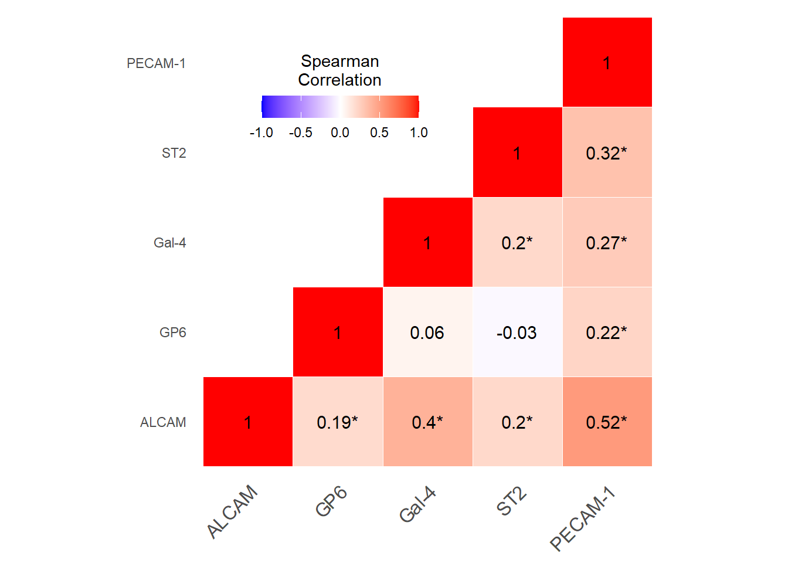
Protein EMM Selection
Individual Regressions
We fit a linear regression model for each protein, including an interaction term between the protein and the intervention group (treatment). Volcano plots are used to visualize the significance and magnitude of these interaction effects.
SPPB
intxn_df = matrix(NA,nrow=92,ncol=2)
colnames(intxn_df) = c("effect","p-value")
for (i in 3:94){
prot=names(rprotblds)[i]
formtmp=paste("fu_sppb ~ bl_sppb + age + sex + race___4 + hf_cat + `",prot,
"`*intervention_1_control_0",sep="")
tmpmod=summary(lm(data=rprotblds,formula=formtmp))
intxn_df[i-2,]=tmpmod$coefficients[nrow(tmpmod$coefficients),c(1,4)]
}
intxn_df = data.frame(Protein=names(rprotblds)[3:94],intxn_df,
Significance=ifelse(intxn_df[,2]<0.05,"Significant","Not Significant"))
summary(p.adjust(intxn_df$p.value,method='fdr')) Min. 1st Qu. Median Mean 3rd Qu. Max.
0.4430 0.6299 0.8561 0.7804 0.9143 0.9926 #none are significant after FDR adjustment6MWD
# --- 6MWD Analysis ---
intxn_df = matrix(NA,nrow=92,ncol=2)
colnames(intxn_df) = c("effect","p-value")
for (i in 3:94){
prot=names(rprotblds)[i]
formtmp=paste("fu_smw ~ bl_smw + age + sex + race___4 + hf_cat + `",prot,
"`*intervention_1_control_0",sep="")
tmpmod=summary(lm(data=rprotblds,formula=formtmp))
intxn_df[i-2,]=tmpmod$coefficients[nrow(tmpmod$coefficients),c(1,4)]
}
intxn_df = data.frame(Protein=names(rprotblds)[3:94],intxn_df,
Significance=ifelse(intxn_df[,2]<0.05,"Significant","Not Significant"))
summary(p.adjust(intxn_df$p.value,method='fdr')) Min. 1st Qu. Median Mean 3rd Qu. Max.
0.2583 0.3393 0.6864 0.6255 0.8417 0.9675 #none are significant after FDR adjustmentLASSO with Strong Hierarchy for Learning Interactions
SPPB
sppb_data <- cbind(
rprotblds[, c("fu_sppb", "intervention_1_control_0", "bl_sppb", "age", "sex", "race___4", "hf_cat")],
rprotblds[, 3:94]
)
sppb_data <- na.omit(sppb_data)
set.seed(97)
sppb_y <- sppb_data$fu_sppb
# Format for glinternet (factors must be 0/1)
sppb_x <- data.frame(
intervention_1_control_0 = as.numeric(sppb_data$intervention_1_control_0) - 1,
sppb_data$bl_sppb,
sppb_data$age,
sex = as.numeric(sppb_data$sex) - 1,
race___4 = as.numeric(sppb_data$race___4) - 1,
hf_cat = as.numeric(sppb_data$hf_cat) - 1,
sppb_data[, 8:99]
)
# Specify number of levels (1 = continuous, 2 = binary)
numLevels <- c(2, 1, 1, 2, 2, 2, rep(1, 92))
# Cross-validation to select lambda
fit.cv <- glinternet.cv(sppb_x, sppb_y, numLevels = numLevels, nFolds = 10, nLambda = 10)
fit <- glinternet(sppb_x, sppb_y, numLevels = numLevels, lambda = fit.cv$lambdaHat)
coeffs <- coef(fit)[[2]]
cat("\nSPPB - Proteins with treatment interaction:\n")
SPPB - Proteins with treatment interaction:print(names(sppb_data[, 8:99])[coeffs$interactions$catcont[, 2] - 2])[1] "GP6"cat("\nSPPB - Main effects:\n")
SPPB - Main effects:print(names(sppb_data[, 8:99])[coeffs$mainEffects$cont[c(-1, -2)] - 2]) [1] "TNFSF13B" "SHPS-1" "ST2" "PI3"
[5] "IGFBP-1" "CTSD" "IL2-RA" "ALCAM"
[9] "PDGF subunit A" "TFF3" "KLK6" "SELP"
[13] "CDH5" "MCP-1" "MPO" "BLM hydrolase"
[17] "CPA1" "TLT-2" "CHIT1" "FABP4"
[21] "CCL24" "PRTN3" "SPON1" "CCL15"
[25] "ICAM-2" "CXCL16" "PGLYRP1" "CTSZ"
[29] "Ep-CAM" "SCGB3A2" "IGFBP-7" "GP6" 6MWD
smw_data <- cbind(
rprotblds[, c("fu_smw", "intervention_1_control_0", "bl_smw", "age", "sex", "race___4", "hf_cat")],
rprotblds[, 3:94]
)
smw_data <- na.omit(smw_data)
set.seed(567)
smw_y <- smw_data$fu_smw
smw_x <- data.frame(
intervention_1_control_0 = as.numeric(smw_data$intervention_1_control_0) - 1,
smw_data$bl_smw,
smw_data$age,
sex = as.numeric(smw_data$sex) - 1,
race___4 = as.numeric(smw_data$race___4) - 1,
hf_cat = as.numeric(smw_data$hf_cat) - 1,
smw_data[, 8:99]
)
numLevels <- c(2, 1, 1, 2, 2, 2, rep(1, 92))
fit.cv <- glinternet.cv(smw_x, smw_y, numLevels = numLevels, nFolds = 10, nLambda = 10)
fit <- glinternet(smw_x, smw_y, numLevels = numLevels, lambda = fit.cv$lambdaHat)
coeffs <- coef(fit)[[2]]
cat("\n6MWD - Proteins with treatment interaction:\n")
6MWD - Proteins with treatment interaction:print(names(smw_data[, 8:99])[coeffs$interactions$catcont[, 2] - 2])[1] "ALCAM" "Gal-4"cat("\n6MWD - Main effects:\n")
6MWD - Main effects:print(names(smw_data[, 8:99])[coeffs$mainEffects$cont[c(-1, -2)] - 2]) [1] "CXCL16" "TNFSF13B" "PRTN3" "ITGB2"
[5] "SELE" "LDL receptor" "MMP-9" "IL2-RA"
[9] "CHIT1" "PDGF subunit A" "IL-17RA" "PSP-D"
[13] "uPA" "SELP" "IL-1RT1" "CPA1"
[17] "Notch 3" "ICAM-2" "CNTN1" "MEPE"
[21] "CDH5" "SCGB3A2" "TLT-2" "CTSD"
[25] "PAI" "ST2" "GDF-15" "CCL16"
[29] "DLK-1" "CPB1" "SPON1" "IL-6RA"
[33] "MMP-2" "RETN" "IGFBP-1" "PCSK9"
[37] "GP6" "PI3" "EGFR" "t-PA"
[41] "ALCAM" "Gal-4" Nonlinear interactions with BART
SPPB
set.seed(45)
options(java.parameters = "-Xmx4000m")
set_bart_machine_num_cores(1)bartMachine now using 1 cores.#model fit
sppb_data <- cbind(rprotblds[,c("fu_sppb","intervention_1_control_0","bl_sppb","age","sex","race___4","hf_cat")],
rprotblds[,3:94])
#remove incomplete cases (any rows with missingness, mostly due to lack of follow up)
sppb_data = na.omit(sppb_data);
sppb_y <- sppb_data$fu_sppb
sppb_x <- data.frame(sppb_data$intervention_1_control_0,
sppb_data$bl_sppb,sppb_data$age,
sppb_data$sex,
sppb_data$race___4,
sppb_data$hf_cat,
sppb_data[,8:99])
bart_machine_sppb <- bartMachine(sppb_x, sppb_y,
num_trees=100,
num_burn_in=2000,
num_iterations_after_burn_in=2000,
use_missing_data=TRUE,
mem_cache_for_speed = FALSE,
seed=34)bartMachine initializing with 100 trees...
bartMachine vars checked...
bartMachine java init...
bartMachine factors created...
bartMachine before preprocess...
bartMachine after preprocess... 102 total features...
bartMachine sigsq estimated...
bartMachine training data finalized...
Now building bartMachine for regression...Covariate importance prior ON. Missing data feature ON.
evaluating in sample data...donebart_machine_sppbbartMachine v1.3.4.1 for regression
Missing data feature ON
training data size: n = 202 and p = 102
built in 7 secs on 1 core, 100 trees, 2000 burn-in and 2000 post. samples
sigsq est for y beforehand: 2.703
avg sigsq estimate after burn-in: 4.76879
in-sample statistics:
L1 = 283.32
L2 = 650.11
rmse = 1.79
Pseudo-Rsq = 0.707
p-val for shapiro-wilk test of normality of residuals: 0
p-val for zero-mean noise: 0.98309 plot_convergence_diagnostics(bart_machine_sppb)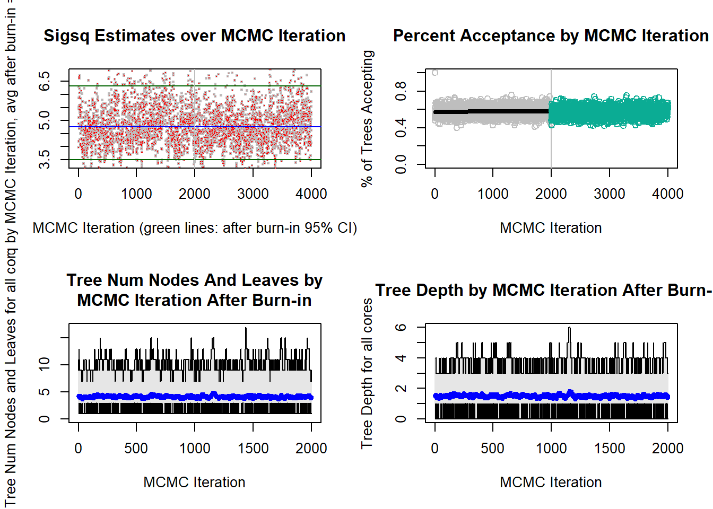
reps=100
intxninvest_sppb=interaction_investigator(bart_machine_sppb,
plot=FALSE,
num_var_plot=25,
bottom_margin=20,
num_replicates_for_avg=reps,
num_trees_bottleneck=20)........................................
........................................
....................#average count of interactions between protein and treatment/control
#sort(rowSums(intxninvest_sppb$interaction_counts_avg[3:94,95:96]),decreasing=TRUE)
#mean and sd of interaction counts
#cbind(intxninvest_sppb$interaction_counts_avg[3:94,95:96],
# 1.96*intxninvest_sppb$interaction_counts_sd[3:94,95:96]/sqrt(reps))
#sum of count of interactions
bartintxn_means=apply(intxninvest_sppb$interaction_counts[3:94,95:96,],1,sum)/reps
bartintxn_sds=apply(apply(intxninvest_sppb$interaction_counts[3:94,95:96,],c(1,3),sum),1,sd)
bartintxn_moe=1.96 * bartintxn_sds / sqrt(reps)
bartintxn_df=data.frame(Protein=rownames(intxninvest_sppb$interaction_counts_avg)[3:94],
Importance=bartintxn_means,MOE=bartintxn_moe)
bartintxn_df = bartintxn_df[order(bartintxn_df$Importance,decreasing=TRUE),]
#top 20 only
bartintxn_df=bartintxn_df[1:20,]
par(mar = c(7, 6, 3, 0))
bars = barplot(bartintxn_df$Importance,
names.arg = bartintxn_df$Protein,
las = 2,
ylab = "Importance",
col = "gray",
ylim = c(0, max(bartintxn_df$Importance + bartintxn_df$MOE))
)
conf_upper = bartintxn_df$Importance + bartintxn_df$MOE
conf_lower = bartintxn_df$Importance - bartintxn_df$MOE
segments(bars, bartintxn_df$Importance, bars, conf_upper, col = rgb(0.59, 0.39, 0.39), lwd = 3) # Draw error bars
segments(bars, bartintxn_df$Importance, bars, conf_lower, col = rgb(0.59, 0.39, 0.39), lwd = 3)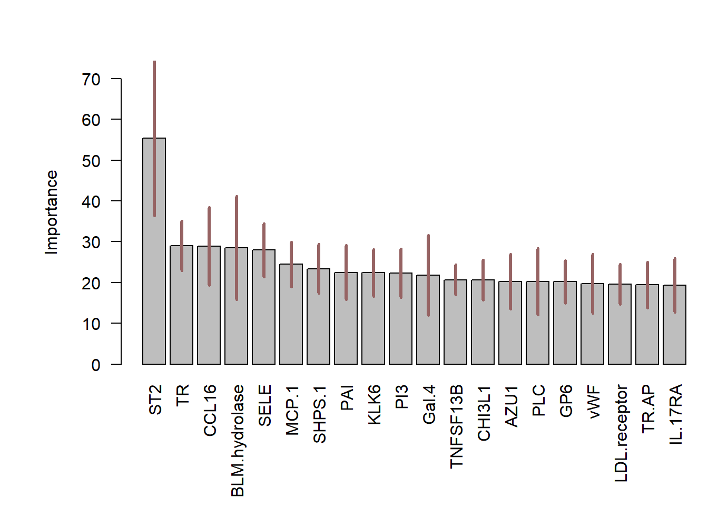
6MWD
set.seed(231)
options(java.parameters = "-Xmx4000m")
set_bart_machine_num_cores(1)bartMachine now using 1 cores.#model fit
smw_data <- cbind(rprotblds[,c("fu_smw","intervention_1_control_0","bl_smw","age","sex","race___4","hf_cat")],
rprotblds[,3:94])
#remove incomplete cases (any rows with missingness, mostly due to lack of follow up)
smw_data = na.omit(smw_data);
smw_y <- smw_data$fu_smw
smw_x <- data.frame(smw_data$intervention_1_control_0,
smw_data$bl_smw,smw_data$age,
smw_data$sex,
smw_data$race___4,
smw_data$hf_cat,
smw_data[,8:99])
bart_machine_smw <- bartMachine(smw_x, smw_y,
num_trees=100,
num_burn_in=2000,
num_iterations_after_burn_in=2000,
use_missing_data=TRUE,
mem_cache_for_speed = FALSE,
seed=231)bartMachine initializing with 100 trees...
bartMachine vars checked...
bartMachine java init...
bartMachine factors created...
bartMachine before preprocess...
bartMachine after preprocess... 102 total features...
bartMachine sigsq estimated...
bartMachine training data finalized...
Now building bartMachine for regression...Covariate importance prior ON. Missing data feature ON.
evaluating in sample data...donebart_machine_smwbartMachine v1.3.4.1 for regression
Missing data feature ON
training data size: n = 172 and p = 102
built in 5.8 secs on 1 core, 100 trees, 2000 burn-in and 2000 post. samples
sigsq est for y beforehand: 3101.303
avg sigsq estimate after burn-in: 1712.49861
in-sample statistics:
L1 = 2410.51
L2 = 61764.6
rmse = 18.95
Pseudo-Rsq = 0.9788
p-val for shapiro-wilk test of normality of residuals: 5e-05
p-val for zero-mean noise: 0.95756 plot_convergence_diagnostics(bart_machine_smw)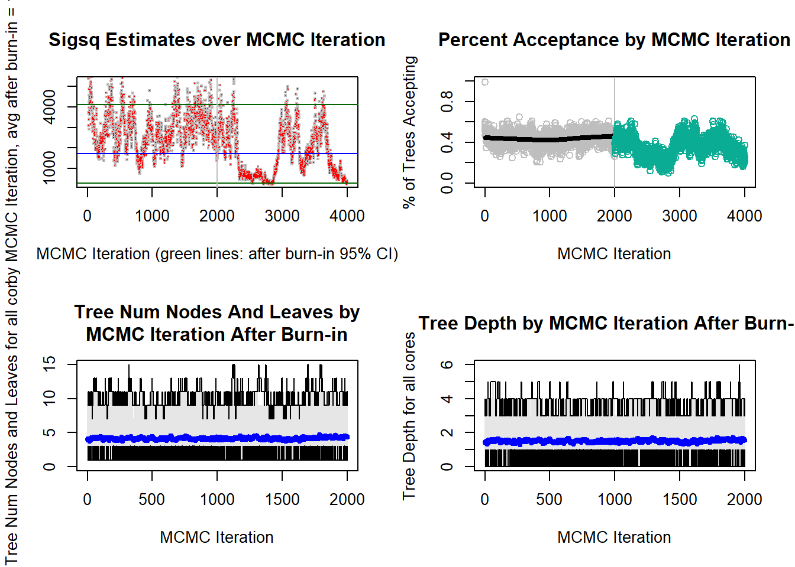
reps=100
intxninvest_smw=interaction_investigator(bart_machine_smw,
plot=FALSE,
num_var_plot=25,
bottom_margin=20,
num_replicates_for_avg=reps,
num_trees_bottleneck=20)........................................
........................................
....................#average count of interactions between protein and treatment/control
#sort(rowSums(intxninvest_smw$interaction_counts_avg[3:94,95:96]),decreasing=TRUE)
#mean and sd of interaction counts
#cbind(intxninvest_smw$interaction_counts_avg[3:94,95:96],
# 1.96*intxninvest_smw$interaction_counts_sd[3:94,95:96]/sqrt(reps))
#sum of count of interactions
bartintxn_means=apply(intxninvest_smw$interaction_counts[3:94,95:96,],1,sum)/reps
bartintxn_sds=apply(apply(intxninvest_smw$interaction_counts[3:94,95:96,],c(1,3),sum),1,sd)
bartintxn_moe=1.96 * bartintxn_sds / sqrt(reps)
bartintxn_df=data.frame(Protein=rownames(intxninvest_smw$interaction_counts_avg)[3:94],
Importance=bartintxn_means,MOE=bartintxn_moe)
bartintxn_df = bartintxn_df[order(bartintxn_df$Importance,decreasing=TRUE),]
#top 20 only
bartintxn_df=bartintxn_df[1:20,]
#par(mar = c(7, 6, 3, 0))
bars = barplot(bartintxn_df$Importance,
names.arg = bartintxn_df$Protein,
las = 2,
ylab = "Importance",
col = "gray",
ylim = c(0, max(bartintxn_df$Importance + bartintxn_df$MOE))
)
conf_upper = bartintxn_df$Importance + bartintxn_df$MOE
conf_lower = bartintxn_df$Importance - bartintxn_df$MOE
segments(bars, bartintxn_df$Importance, bars, conf_upper, col = rgb(0.59, 0.39, 0.39), lwd = 3) # Draw error bars
segments(bars, bartintxn_df$Importance, bars, conf_lower, col = rgb(0.59, 0.39, 0.39), lwd = 3)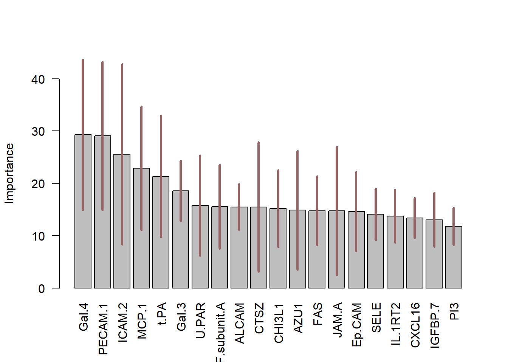
Selected EMM Proteins
| SPPB | 6MWD | |
|---|---|---|
| Individual regressions | None | None |
| LASSO with strong hierarchy | GP6 | ALCAM, Gal-4 |
| BART for nonlinear interactions | ST2 | Gal-4, PECAM-1 |
Regression analyses
Table 2
# Rename protein columns to R-safe names
tmpdf <- rprotblds
colnames(tmpdf)[colnames(tmpdf) %in% protlist] <- make.names(protlist, unique = TRUE)
protlistclean <- make.names(protlist, unique = TRUE)
# Initialize results data frames
regresults.sppb <- data.frame(
Protein = protlist,
Unadjusted.Effect = NA_character_,
Unadjusted.Pval = NA_real_,
Adjusted.Effect = NA_character_,
Adjusted.Pval = NA_real_,
Interaction.Pval = NA_real_,
stringsAsFactors = FALSE
)
regresults.6mwd <- regresults.sppb
# Run regressions
for (i in seq_along(protlist)) {
prot_col <- protlistclean[i]
# Prepare data for SPPB
idx <- which(!is.na(tmpdf$fu_sppb) & !is.na(tmpdf$bl_sppb) &
!is.na(tmpdf[[prot_col]]) & !is.na(tmpdf$intervention_1_control_0))
if (length(idx) > 0) {
y_sppb <- tmpdf$fu_sppb[idx]
x_sppb_bl <- tmpdf$bl_sppb[idx]
x_prot <- tmpdf[[prot_col]][idx]
x_int <- tmpdf$intervention_1_control_0[idx]
x_age <- tmpdf$age[idx]
x_sex <- tmpdf$sex[idx]
x_race <- tmpdf$race___4[idx]
x_hf <- tmpdf$hf_cat[idx]
# SPPB - Unadjusted
mod.sppb.unadj <- lm(y_sppb ~ x_sppb_bl + x_prot + x_int)
# SPPB - Adjusted
mod.sppb.adj <- lm(y_sppb ~ x_sppb_bl + x_prot * x_int + x_age + x_sex + x_race + x_hf * x_int)
# Extract SPPB unadjusted results
s.unadj <- summary(mod.sppb.unadj)
if ("x_prot" %in% rownames(s.unadj$coefficients)) {
ci.u <- confint(mod.sppb.unadj, "x_prot")
regresults.sppb$Unadjusted.Effect[i] <- sprintf("%.2f (%.2f, %.2f)",
s.unadj$coef["x_prot", 1],
ci.u[1], ci.u[2])
regresults.sppb$Unadjusted.Pval[i] <- round(s.unadj$coef["x_prot", 4], 4)
}
# Extract SPPB adjusted results
s.adj <- summary(mod.sppb.adj)
if ("x_prot" %in% rownames(s.adj$coefficients)) {
ci.a <- confint(mod.sppb.adj, "x_prot")
regresults.sppb$Adjusted.Effect[i] <- sprintf("%.2f (%.2f, %.2f)",
s.adj$coef["x_prot", 1],
ci.a[1], ci.a[2])
regresults.sppb$Adjusted.Pval[i] <- round(s.adj$coef["x_prot", 4], 4)
# Interaction term
int.idx <- grep("x_prot:x_int", rownames(s.adj$coefficients))
if (length(int.idx) > 0) {
regresults.sppb$Interaction.Pval[i] <- round(s.adj$coef[int.idx[1], 4], 4)
}
}
}
# Prepare data for 6MWD
idx.6mwd <- which(!is.na(tmpdf$fu_smw) & !is.na(tmpdf$bl_smw) &
!is.na(tmpdf[[prot_col]]) & !is.na(tmpdf$intervention_1_control_0))
if (length(idx.6mwd) > 0) {
y_6mwd <- tmpdf$fu_smw[idx.6mwd]
x_6mwd_bl <- tmpdf$bl_smw[idx.6mwd]
x_prot <- tmpdf[[prot_col]][idx.6mwd]
x_int <- tmpdf$intervention_1_control_0[idx.6mwd]
x_age <- tmpdf$age[idx.6mwd]
x_sex <- tmpdf$sex[idx.6mwd]
x_race <- tmpdf$race___4[idx.6mwd]
x_hf <- tmpdf$hf_cat[idx.6mwd]
# 6MWD - Unadjusted
mod.6mwd.unadj <- lm(y_6mwd ~ x_6mwd_bl + x_prot + x_int)
# 6MWD - Adjusted
mod.6mwd.adj <- lm(y_6mwd ~ x_6mwd_bl + x_prot * x_int + x_age + x_sex + x_race + x_hf * x_int)
# Extract 6MWD unadjusted results
s.unadj <- summary(mod.6mwd.unadj)
if ("x_prot" %in% rownames(s.unadj$coefficients)) {
ci.u <- confint(mod.6mwd.unadj, "x_prot")
regresults.6mwd$Unadjusted.Effect[i] <- sprintf("%.2f (%.2f, %.2f)",
s.unadj$coef["x_prot", 1],
ci.u[1], ci.u[2])
regresults.6mwd$Unadjusted.Pval[i] <- round(s.unadj$coef["x_prot", 4], 4)
}
# Extract 6MWD adjusted results
s.adj <- summary(mod.6mwd.adj)
if ("x_prot" %in% rownames(s.adj$coefficients)) {
ci.a <- confint(mod.6mwd.adj, "x_prot")
regresults.6mwd$Adjusted.Effect[i] <- sprintf("%.2f (%.2f, %.2f)",
s.adj$coef["x_prot", 1],
ci.a[1], ci.a[2])
regresults.6mwd$Adjusted.Pval[i] <- round(s.adj$coef["x_prot", 4], 4)
# Interaction term
int.idx <- grep("x_prot:x_int", rownames(s.adj$coefficients))
if (length(int.idx) > 0) {
regresults.6mwd$Interaction.Pval[i] <- round(s.adj$coef[int.idx[1], 4], 4)
}
}
}
}
# Display only selected proteins
sppb_proteins <- c("GP6", "ST2")
smwd_proteins <- c("ALCAM", "Gal-4", "PECAM-1")
gt(regresults.sppb[regresults.sppb$Protein %in% sppb_proteins, ]) %>%
tab_header(title = "SPPB Regression Results")| SPPB Regression Results | |||||
|---|---|---|---|---|---|
| Protein | Unadjusted.Effect | Unadjusted.Pval | Adjusted.Effect | Adjusted.Pval | Interaction.Pval |
| GP6 | -0.69 (-1.09, -0.30) | 0.0007 | -0.56 (-1.12, 0.00) | 0.0507 | 0.8223 |
| ST2 | -0.76 (-1.67, 0.15) | 0.1004 | -1.16 (-2.37, 0.05) | 0.0591 | 0.0930 |
Adjustment covariates: age, sex, race, heart failure subtype (reduced or preserved ejection fraction) and treatment assignment. Interaction P-value is for protein level * treatment assignment. Units for SPPB are based on an integer score of 0-12 and 6MWD is in meters. The effect size is per NPX expression unit of the protein which on a log2 scale such that an increase of one unit is equivalent to a doubling of the protein level.
gt(regresults.6mwd[regresults.6mwd$Protein %in% smwd_proteins, ]) %>%
tab_header(title = "6MWD Regression Results")| 6MWD Regression Results | |||||
|---|---|---|---|---|---|
| Protein | Unadjusted.Effect | Unadjusted.Pval | Adjusted.Effect | Adjusted.Pval | Interaction.Pval |
| ALCAM | -13.19 (-51.67, 25.29) | 0.4996 | -85.50 (-150.83, -20.17) | 0.0106 | 0.0131 |
| Gal-4 | 14.32 (-10.72, 39.37) | 0.2606 | 31.56 (-12.70, 75.81) | 0.1611 | 0.2296 |
| PECAM-1 | -18.79 (-39.36, 1.77) | 0.0730 | -41.75 (-72.11, -11.39) | 0.0073 | 0.0395 |
Adjustment covariates: age, sex, race, heart failure subtype (reduced or preserved ejection fraction) and treatment assignment. Interaction P-value is for protein level * treatment assignment. Units for SPPB are based on an integer score of 0-12 and 6MWD is in meters. The effect size is per NPX expression unit of the protein which on a log2 scale such that an increase of one unit is equivalent to a doubling of the protein level.
Figure 2
#create long form dataset
rprotblds_long=pivot_longer(data=rprotblds[,
c("subject_id","timepoint","intervention_1_control_0",
"bl_smw","fu_smw","bl_sppb","fu_sppb",protlist)],
cols=protlist,
names_to='Protein',values_to='ExpressionLevel')
#rprotblds_long$intervention_1_control_0 <- factor(rcombds_long_bl$intervention_1_control_0,levels=c(0,1))
rprotblds_long$sppb_chg = rprotblds_long$fu_sppb - rprotblds_long$bl_sppb
rprotblds_long$smw_chg = rprotblds_long$fu_smw - rprotblds_long$bl_smw
colnames(rprotblds_long)[3] <- "Intervention"
rprotblds_long$Protein = factor(rprotblds_long$Protein,levels=protlist)
protlist.6mwd <- c("ALCAM","Gal-4","PECAM-1")
protlist.sppb <- c("GP6","ST2")
#SPPB
fig2 <- ggplot(data=rprotblds_long[rprotblds_long$Protein %in% protlist.sppb,],
mapping=aes(x=ExpressionLevel,y=sppb_chg,color=Intervention))+
geom_smooth(method='lm')+
geom_hline(yintercept=0,color='black',linetype='dashed')+
facet_wrap('Protein',scales='free',ncol=3)+
labs(x="Protein expression units (NPX)",y="Change in SPPB Score")+
scale_color_discrete(breaks=c(1,0),
labels=c("Rehabilitation\nIntervention","Attention\nControl"))+
theme(
axis.title.x = element_text(size = 13),
axis.title.y = element_text(size = 13),
axis.text.x = element_text(size = 11),
axis.text.y = element_text(size = 11),
strip.text = element_text(size = 13), # protein facet labels
legend.title = element_blank(),
legend.position = c(0.15, 0.15),
legend.box.background = element_rect(color = "black"))
print(fig2)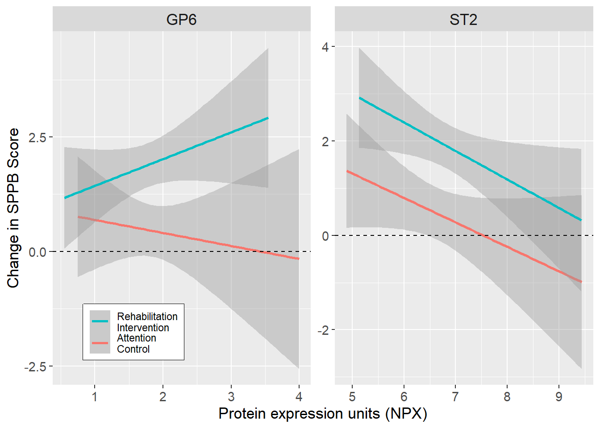
Figure 3
#6MWD
fig3 <- ggplot(data=rprotblds_long[rprotblds_long$Protein %in% protlist.6mwd,],
mapping=aes(x=ExpressionLevel,y=smw_chg,color=Intervention))+
geom_smooth(method='lm')+
geom_hline(yintercept=0,color='black',linetype='dashed')+
facet_wrap('Protein',scales='free',ncol=3)+
labs(x="Protein expression units (NPX)",y="Change in 6MWD (meters)")+
scale_color_discrete(breaks=c(1,0),
labels=c("Rehabilitation\nIntervention","Attention\nControl"))+
theme(
axis.title.x = element_text(size = 13),
axis.title.y = element_text(size = 13),
axis.text.x = element_text(size = 11),
axis.text.y = element_text(size = 11),
strip.text = element_text(size = 13), # protein facet labels
legend.title = element_blank(),
legend.position = c(0.15, 0.15),
legend.box.background = element_rect(color = "black"))
print(fig3)
Matching Tree Analyses
ps.df <- rprotblds
ps.df$trt <- as.numeric(ps.df$intervention_1_control_0) - 1
# Keep only subjects with complete data on key proteins and outcomes
ps.df <- ps.df[complete.cases(ps.df[, c("ALCAM", "Gal-4", "PECAM-1",
"GP6", "ST2",
'bl_smw', 'fu_smw', 'bl_sppb', 'fu_sppb')]), ]
# Fit propensity score model using logistic regression
ppty <- glm(
trt ~ age + sex + race___4 + hf_cat,
family = binomial(link = "logit"),
data = ps.df
)
# Generate propensity scores
prop.score <- predict.glm(ppty, type = "response", na.action = na.exclude)
ps.df <- as.data.frame(cbind(ps.df, prop.score))
# Create matching distance matrix based on propensity scores
ppty.distance <- match_on(ppty)
cat("Propensity Score Matching Summary\n")Propensity Score Matching Summarycat("==================================\n")==================================cat("Total subjects with complete data:", nrow(ps.df), "\n")Total subjects with complete data: 181 cat("Treatment:", sum(ps.df$trt == 1), "\n")Treatment: 99 cat("Control:", sum(ps.df$trt == 0), "\n\n")Control: 82 These functions are adapted from Zhang et al. (2021) “Matching Trees for Treatment Effect Heterogeneity” https://doi.org/10.1016/j.csda.2021.107188.
# Function to get parent node in tree structure
parent <- function(x) {
if (x[1] != 1) {
c(Recall(if (x %% 2 == 0L) x / 2 else (x - 1) / 2), x)
} else {
x
}
}
# Function to prune tree based on treatment effect overlap
# Prunes terminal nodes if confidence intervals for treatment effects overlap
jesse.tree.select <- function(input, set1.caliper.tree) {
fit.overlap <- TRUE
ptree1 <- input
while (fit.overlap == TRUE) {
if (dim(ptree1$frame)[1] == 1) break
rownames <- as.numeric(rownames(ptree1$frame))
size <- dim(ptree1$frame)[1]
rownamesmax <- rownames[which.max(rownames)]
rownamessecond <- rownames[which(rownames == sort(unique(rownames), partial = size - 1)[size - 1])]
# Get data for terminal nodes
subset1 <- set1.caliper.tree[ptree1$where == which(rownames == rownamesmax), ]
subset2 <- set1.caliper.tree[ptree1$where == which(rownames == rownamessecond), ]
# Create dummy variable for node membership
dummy <- c(rep("1", dim(subset1)[1]), rep("2", dim(subset2)[1]))
subsetf <- cbind(rbind(subset1, subset2), dummy)
subsetf$dummy <- as.factor(subsetf$dummy)
subsetf$trt <- as.factor(subsetf$trt)
# Test treatment effect differences between nodes
ls.lm <- lm(outcome ~ dummy * trt, data = subsetf)
ls.list <- lsmeans(ls.lm, list(pairwise ~ dummy | trt, pairwise ~ trt | dummy))
out1 <- as.matrix(summary(ls.list[[4]]))
q.value <- 1.96 # 95% confidence interval
CI1 <- c(
as.numeric(out1[1, 3]) - q.value * as.numeric(out1[1, 4]),
as.numeric(out1[1, 3]) + q.value * as.numeric(out1[1, 4])
)
CI2 <- c(
as.numeric(out1[2, 3]) - q.value * as.numeric(out1[2, 4]),
as.numeric(out1[2, 3]) + q.value * as.numeric(out1[2, 4])
)
# Check for overlap in confidence intervals
fit.overlap <- max(CI1[1], CI2[1]) < min(CI1[2], CI2[2])
fit.overlap[is.na(fit.overlap)] <- FALSE
if (fit.overlap == FALSE) break
# Prune the node
ptree1 <- snip.rpart(ptree1, toss = tail(head(parent(rownamesmax), -1), n = 1))
}
if (dim(ptree1$frame)[1] > 1) {
return(ptree1)
} else {
return(input)
}
}SPPB
# Separate treatment and control groups
set.trt <- ps.df[ps.df[, "trt"] == 1, ]
set.cont <- ps.df[ps.df[, "trt"] == 0, ]
# Perform 1:1 matching with caliper on protein values
match.set <- c()
calp.sd <- 1 # Caliper width: 1 SD of protein values
for (i in 1:dim(set.trt)[1]) {
pair.set1 <- c()
# Check if control subject is within caliper on both GP6 and ST2
var.select1 <- ifelse(
abs(set.cont$GP6 - set.trt$GP6[i]) < calp.sd * sd(set.trt$GP6),
1, 0
)
var.select2 <- ifelse(
abs(set.cont$ST2 - set.trt$ST2[i]) < calp.sd * sd(set.trt$ST2),
1, 0
)
var.selectf <- ifelse(var.select1 + var.select2 == 2, 1, 0)
id <- c(1:length(var.selectf))
lenset.cont2 <- as.data.frame(cbind(id, set.cont, var.selectf))
lenset.cont3 <- lenset.cont2[lenset.cont2[, "var.selectf"] == 1, ]
# Match to nearest propensity score if within caliper
if (dim(lenset.cont3)[1] > 0) {
cont.index <- which.min(abs(lenset.cont3$prop.score - set.trt$prop.score[i]))
pair.set <- rbind(
set.trt[i, ],
lenset.cont3[cont.index, c(-1, -dim(lenset.cont3)[2])]
)
pairin <- rep(i, 2)
pair.set1 <- cbind(pair.set, pairin)
set.cont <- set.cont[!set.cont$prop.score == lenset.cont3$prop.score[cont.index], ]
} else {
pair.set1 <- c()
set.cont <- set.cont
}
match.set <- rbind(match.set, pair.set1)
}
# Calculate treatment effect (difference in outcome change)
treat.set <- match.set[match.set[, "trt"] == 1, ]
control.set <- match.set[match.set[, "trt"] == 0, ]
outcome.diff <- (treat.set$fu_sppb - treat.set$bl_sppb) -
(control.set$fu_sppb - control.set$bl_sppb)
set.total <- as.data.frame(rbind(
cbind(treat.set, outcome.diff),
cbind(control.set, outcome.diff)
))
matchedset.sppb <- set.total # Store for later use
cat("SPPB Matching Summary\n")SPPB Matching Summarycat("====================\n")====================cat("Matched pairs:", nrow(treat.set), "\n")Matched pairs: 81 cat("Total matched subjects:", nrow(set.total), "\n\n")Total matched subjects: 162 # Build matching tree on proteins GP6 and ST2
tree.rpart <- rpart(
outcome.diff ~ GP6 + ST2,
method = "anova",
data = set.total,
control = rpart.control(minbucket = 15, maxdepth = 2)
)
# Add outcome variable and prune tree
set.total$outcome <- set.total$fu_sppb - set.total$bl_sppb
tree.all <- jesse.tree.select(tree.rpart, set.total)
rpart.plot(tree.all, box.palette = 'Reds', extra = 1)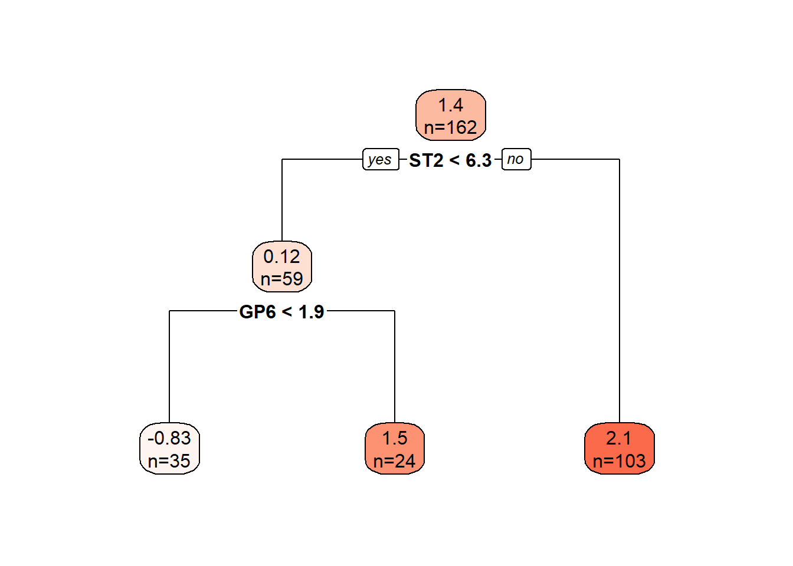
# Extract treatment effects by tree node and get confidence intervals
set.total$sppb_node <- rpart.predict.leaves(tree.all, set.total, type = "where")
modscore.sppb <- lm(data = set.total, formula = outcome.diff ~ 0 + as.factor(sppb_node))
# Summary of results
cat("SPPB Matching Tree - Treatment Effects by Node\n")SPPB Matching Tree - Treatment Effects by Nodecat("==============================================\n\n")==============================================print(confint(modscore.sppb)) 2.5 % 97.5 %
as.factor(sppb_node)3 -1.8991465 0.2420037
as.factor(sppb_node)4 0.2071578 2.7928422
as.factor(sppb_node)5 1.4633097 2.7114475cat("\n")print(summary(modscore.sppb))
Call:
lm(formula = outcome.diff ~ 0 + as.factor(sppb_node), data = set.total)
Residuals:
Min 1Q Median 3Q Max
-7.0874 -2.1504 -0.0874 1.9126 8.9126
Coefficients:
Estimate Std. Error t value Pr(>|t|)
as.factor(sppb_node)3 -0.8286 0.5421 -1.529 0.1284
as.factor(sppb_node)4 1.5000 0.6546 2.291 0.0232 *
as.factor(sppb_node)5 2.0874 0.3160 6.606 5.64e-10 ***
---
Signif. codes: 0 '***' 0.001 '**' 0.01 '*' 0.05 '.' 0.1 ' ' 1
Residual standard error: 3.207 on 159 degrees of freedom
Multiple R-squared: 0.2437, Adjusted R-squared: 0.2294
F-statistic: 17.08 on 3 and 159 DF, p-value: 1.158e-09# ---- K-Fold Cross-Validation Stability Analysis for SPPB ----
set.seed(67)
nfolds <- 10
folds <- cut(seq(1, nrow(treat.set)), breaks = nfolds, labels = FALSE)
folds <- folds[sample(nrow(treat.set))]
maxdepth <- 1:3
minbucket <- seq(5, 30, 5)
bst <- 1000
bst.stg <- c(0, 0)
cvres.df <- data.frame(maxdepth = NA, minbucket = NA, testrmse.dt = NA, testrmse.rf = NA)
idx <- 0
for (j in maxdepth) {
for (k in minbucket) {
idx <- idx + 1
tree.2 <- list()
tree.leaves <- list()
tree.mod.train <- list()
tree.test.rmse <- list()
rf.mod.train <- list()
rf.test.rmse <- list()
for (i in 1:nfolds) {
# Identify training and test folds
ids <- treat.set$subject_id[folds != i]
pairs.train <- set.total$pairin[set.total$subject_id %in% ids]
ids <- treat.set$subject_id[folds == i]
pairs.test <- set.total$pairin[set.total$subject_id %in% ids]
# Fit tree on training data
tmp <- rpart(
outcome.diff ~ GP6 + ST2,
method = "anova",
data = set.total[set.total$pairin %in% pairs.train, ],
control = rpart.control(maxdepth = j, minbucket = k)
)
tree.2[[i]] <- jesse.tree.select(tmp, set.total)
tree.leaves[[i]] <- rpart.predict.leaves(tree.2[[i]], set.total, type = "where")
# Get predictions on test set
df <- cbind(set.total, tree.leaves[[i]])
colnames(df)[ncol(df)] <- "tree_leaves_temp"
tree.mod.train[[i]] <- lm(
outcome.diff ~ 0 + as.factor(tree_leaves_temp),
data = df[df$pairin %in% pairs.train, ]
)
tree.test.rmse[[i]] <- sqrt(mean((
df[df$pairin %in% pairs.test, 'outcome.diff'] -
predict(tree.mod.train[[i]], df[df$pairin %in% pairs.test, ])
)^2))
# Fit random forest on training data
rf.df.train <- df[df$pairin %in% pairs.train, c("outcome.diff", "GP6", "ST2")]
rf.df.test <- df[df$pairin %in% pairs.test, c("outcome.diff", "GP6", "ST2")]
rf.mod.train[[i]] <- randomForest(outcome.diff ~ GP6 + ST2,
data = rf.df.train, ntree = 500, seed = 42)
rf.test.rmse[[i]] <- sqrt(mean((
rf.df.test$outcome.diff -
predict(rf.mod.train[[i]], rf.df.test)
)^2))
}
if (mean(unlist(tree.test.rmse)) < bst) {
bst <- mean(unlist(tree.test.rmse))
bst.stg[1] <- j
bst.stg[2] <- k
}
cvres.df[idx, ] <- c(j, k, mean(unlist(tree.test.rmse)), mean(unlist(rf.test.rmse)))
}
}
# Format CV results
cvres.df$maxdepth <- factor(cvres.df$maxdepth, levels = 1:3)
cvres.df$minbucket <- as.integer(cvres.df$minbucket)
# Calculate mean RF RMSE for reference line
rf.mean.sppb <- mean(cvres.df$testrmse.rf, na.rm = TRUE)
cvplot1 <- ggplot(data = cvres.df, mapping = aes(x = minbucket, color = maxdepth, fill = maxdepth)) +
geom_line(mapping = aes(y = testrmse.dt), linewidth = 1) +
geom_point(mapping = aes(y = testrmse.dt, shape = maxdepth), size = 3) +
geom_hline(yintercept = rf.mean.sppb, color = 'black', linetype = 'dashed', linewidth = 1.2) +
annotate("text", x = 20, y = rf.mean.sppb + 0.08,
label = paste("Random Forest:", round(rf.mean.sppb, 3)),
size = 4, color = "black", hjust = 0) +
ylab("Average Test RMSE") +
xlab("Minimum Bucket Size") +
labs(title = "Average Test RMSE: SPPB Outcome",
subtitle = "Decision Trees vs. Random Forest") +
ylim(c(3.0, 3.8)) +
scale_x_continuous(breaks = seq(5, 30, 5)) +
scale_color_manual(name = "Max Depth", values = c("1" = "#1f77b4", "2" = "#ff7f0e", "3" = "#2ca02c")) +
scale_fill_manual(name = "Max Depth", values = c("1" = "#1f77b4", "2" = "#ff7f0e", "3" = "#2ca02c")) +
theme_minimal() +
theme(
plot.title = element_text(hjust = 0.5, face = "bold", size = 14),
plot.subtitle = element_text(hjust = 0.5, size = 12),
legend.position = "top",
panel.grid.major = element_line(color = "gray90"),
panel.grid.minor = element_blank()
)
print(cvplot1)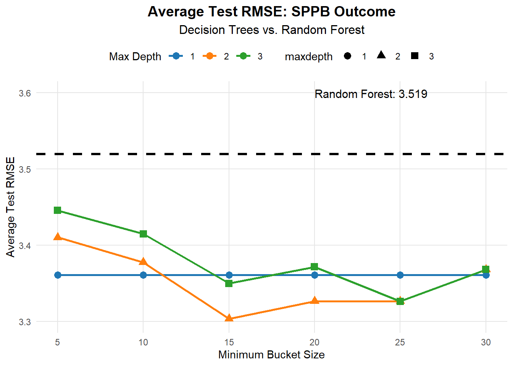
varlist=c("intervention_1_control_0","age","sex","race___4",
"hf_cat","egfr",protlist)
tmpdf = rbind(data.frame(set.total[,varlist],dataset="matched"),
data.frame(setdiff(ps.df[,varlist],set.total[,varlist]),dataset="unmatched"))
tmpdf$dataset=factor(tmpdf$dataset,levels=c("unmatched","matched"))
tmpdf$grp=str_c(tmpdf$intervention_1_control_0,tmpdf$dataset)
tmpdf$grp=as.factor(tmpdf$grp)
tmpdf$grp=fct_collapse(tmpdf$grp, Unmatched = c("0unmatched","1unmatched"), MatchedControl = "0matched",MatchedIntervention = "1matched")
tmpdf$grp = factor(tmpdf$grp,levels = c("MatchedControl","MatchedIntervention","Unmatched"))
tmpdf=tmpdf[,-which(names(tmpdf) %in% c("intervention_1_control_0","dataset"))]
tbl_summary(tmpdf,
by=grp,
type = all_continuous() ~ "continuous2",
statistic = list(all_continuous() ~ c("{mean} ({sd})",
"{median} ({p25}, {p75})",
"{min}, {max}"),
all_categorical() ~ "{n} / {N} ({p}%)"
),label = list(age ~ "Age",
sex ~ "Sex (Female=1)",
race___4 ~ "Race(White=1)",
hf_cat ~ "HF Category (HFpEF=1) (Study)",
egfr ~ "EGFR (Study)",
ALCAM ~ "ALCAM",
Gal.4 ~ "Gal-4",
PECAM.1 ~ "PECAM-1",
GP6 ~ "GP6",
ST2 ~ "ST2"
),
missing_text = "(Missing)"
) %>% modify_header(label ~ "**Variable**") %>%
modify_caption("**Baseline Measurements (Unmatched vs. Matched) SPPB**")| Variable | MatchedControl N = 811 |
MatchedIntervention N = 811 |
Unmatched N = 191 |
|---|---|---|---|
| Age | |||
| Mean (SD) | 72 (8) | 72 (8) | 73 (7) |
| Median (Q1, Q3) | 70 (66, 76) | 71 (65, 77) | 76 (68, 78) |
| Min, Max | 60, 90 | 60, 91 | 61, 81 |
| Sex (Female=1) | |||
| 0 | 34 / 81 (42%) | 43 / 81 (53%) | 12 / 19 (63%) |
| 1 | 47 / 81 (58%) | 38 / 81 (47%) | 7 / 19 (37%) |
| Race(White=1) | |||
| 0 | 39 / 81 (48%) | 33 / 81 (41%) | 8 / 19 (42%) |
| 1 | 42 / 81 (52%) | 48 / 81 (59%) | 11 / 19 (58%) |
| HF Category (HFpEF=1) (Study) | |||
| 0 | 46 / 81 (57%) | 40 / 81 (49%) | 6 / 19 (32%) |
| 1 | 35 / 81 (43%) | 41 / 81 (51%) | 13 / 19 (68%) |
| EGFR (Study) | |||
| Mean (SD) | 58 (23) | 52 (22) | 56 (22) |
| Median (Q1, Q3) | 58 (37, 71) | 49 (38, 63) | 63 (35, 70) |
| Min, Max | 18, 101 | 17, 107 | 25, 96 |
| (Missing) | 1 | 0 | 0 |
| ALCAM | |||
| Mean (SD) | 6.70 (0.31) | 6.66 (0.37) | 6.72 (0.45) |
| Median (Q1, Q3) | 6.69 (6.45, 6.91) | 6.65 (6.40, 6.88) | 6.71 (6.38, 7.03) |
| Min, Max | 6.08, 7.82 | 6.06, 7.63 | 5.99, 7.71 |
| Gal-4 | |||
| Mean (SD) | 3.90 (0.67) | 3.96 (0.65) | 3.87 (0.65) |
| Median (Q1, Q3) | 3.90 (3.54, 4.29) | 3.99 (3.59, 4.35) | 3.77 (3.40, 4.52) |
| Min, Max | 2.45, 6.13 | 2.38, 5.64 | 3.01, 5.42 |
| PECAM-1 | |||
| Mean (SD) | 3.48 (0.42) | 3.39 (0.36) | 3.39 (0.30) |
| Median (Q1, Q3) | 3.46 (3.23, 3.73) | 3.41 (3.15, 3.61) | 3.42 (3.19, 3.55) |
| Min, Max | 2.52, 4.75 | 2.36, 4.34 | 2.76, 4.01 |
| GP6 | |||
| Mean (SD) | 1.80 (0.47) | 1.76 (0.49) | 1.71 (0.95) |
| Median (Q1, Q3) | 1.83 (1.45, 2.13) | 1.75 (1.47, 2.10) | 1.54 (1.01, 2.46) |
| Min, Max | 0.83, 3.15 | 0.55, 2.96 | 0.59, 3.55 |
| ST2 | |||
| Mean (SD) | 6.52 (0.79) | 6.67 (0.73) | 7.31 (1.07) |
| Median (Q1, Q3) | 6.48 (5.95, 7.01) | 6.66 (6.20, 7.26) | 6.91 (6.75, 8.29) |
| Min, Max | 4.89, 8.62 | 5.13, 9.12 | 5.59, 9.44 |
| 1 n / N (%) | |||
6MWD
set.trt <- ps.df[ps.df[, "trt"] == 1, ]
set.cont <- ps.df[ps.df[, "trt"] == 0, ]
match.set <- c()
calp.sd <- 1
for (i in 1:dim(set.trt)[1]) {
pair.set1 <- c()
# Check if control subject is within caliper on all three proteins
var.select1 <- ifelse(abs(set.cont$ALCAM - set.trt$ALCAM[i]) < calp.sd * sd(set.trt$ALCAM), 1, 0)
var.select2 <- ifelse(abs(set.cont$`Gal-4` - set.trt$`Gal-4`[i]) < calp.sd * sd(set.trt$`Gal-4`), 1, 0)
var.select3 <- ifelse(abs(set.cont$`PECAM-1` - set.trt$`PECAM-1`[i]) < calp.sd * sd(set.trt$`PECAM-1`), 1, 0)
var.selectf <- ifelse(var.select1 + var.select2 + var.select3 == 3, 1, 0)
id <- c(1:length(var.selectf))
lenset.cont2 <- as.data.frame(cbind(id, set.cont, var.selectf))
lenset.cont3 <- lenset.cont2[lenset.cont2[, "var.selectf"] == 1, ]
if (dim(lenset.cont3)[1] > 0) {
cont.index <- which.min(abs(lenset.cont3$prop.score - set.trt$prop.score[i]))
pair.set <- rbind(set.trt[i, ], lenset.cont3[cont.index, c(-1, -dim(lenset.cont3)[2])])
pairin <- rep(i, 2)
pair.set1 <- cbind(pair.set, pairin)
set.cont <- set.cont[!set.cont$prop.score == lenset.cont3$prop.score[cont.index], ]
} else {
pair.set1 <- c()
set.cont <- set.cont
}
match.set <- rbind(match.set, pair.set1)
}
# Calculate treatment effect
treat.set <- match.set[match.set[, "trt"] == 1, ]
control.set <- match.set[match.set[, "trt"] == 0, ]
outcome.diff <- (treat.set$fu_smw - treat.set$bl_smw) -
(control.set$fu_smw - control.set$bl_smw)
set.total <- as.data.frame(rbind(
cbind(treat.set, outcome.diff),
cbind(control.set, outcome.diff)
))
matchedset.6mwd <- set.total # Store for later use
cat("6MWD Matching Summary\n")6MWD Matching Summarycat("====================\n")====================cat("Matched pairs:", nrow(treat.set), "\n")Matched pairs: 71 cat("Total matched subjects:", nrow(set.total), "\n\n")Total matched subjects: 142 # Build matching tree
tree.rpart <- rpart(
outcome.diff ~ ALCAM + `Gal-4` + `PECAM-1`,
method = "anova",
data = set.total,
control = rpart.control(minbucket = 30, maxdepth = 1)
)
set.total$outcome <- set.total$fu_smw - set.total$bl_smw
tree.all <- jesse.tree.select(tree.rpart, set.total)
rpart.plot(tree.all, box.palette = 'Reds', extra = 1)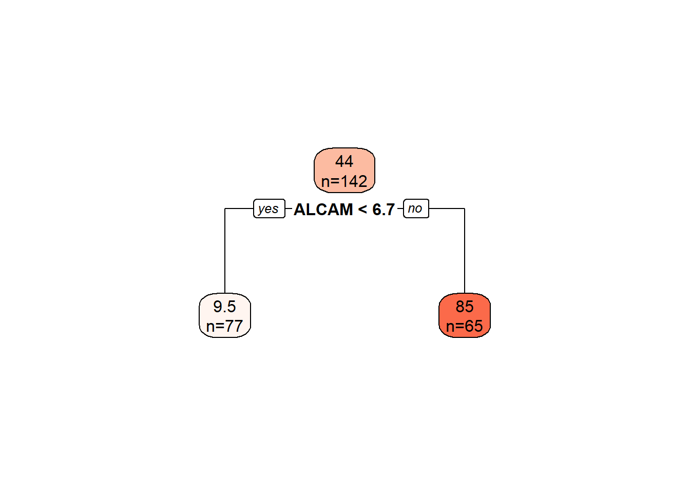
# Extract treatment effects by tree node
set.total$smw_node <- rpart.predict.leaves(tree.all, set.total, type = "where")
modscore.smw <- lm(data = set.total, formula = outcome.diff ~ 0 + as.factor(smw_node))
cat("6MWD Matching Tree - Treatment Effects by Node\n")6MWD Matching Tree - Treatment Effects by Nodecat("==============================================\n\n")==============================================print(confint(modscore.smw)) 2.5 % 97.5 %
as.factor(smw_node)2 -16.52650 35.55242
as.factor(smw_node)3 56.36864 113.05136cat("\n")print(summary(modscore.smw))
Call:
lm(formula = outcome.diff ~ 0 + as.factor(smw_node), data = set.total)
Residuals:
Min 1Q Median 3Q Max
-438.43 -55.15 -4.37 57.88 439.20
Coefficients:
Estimate Std. Error t value Pr(>|t|)
as.factor(smw_node)2 9.513 13.171 0.722 0.471
as.factor(smw_node)3 84.710 14.335 5.909 2.49e-08 ***
---
Signif. codes: 0 '***' 0.001 '**' 0.01 '*' 0.05 '.' 0.1 ' ' 1
Residual standard error: 115.6 on 140 degrees of freedom
Multiple R-squared: 0.202, Adjusted R-squared: 0.1906
F-statistic: 17.72 on 2 and 140 DF, p-value: 1.38e-07# ---- K-Fold Cross-Validation for 6MWD ----
set.seed(324)
nfolds <- 10
folds <- cut(seq(1, nrow(treat.set)), breaks = nfolds, labels = FALSE)
folds <- folds[sample(nrow(treat.set))]
maxdepth <- 1:3
minbucket <- seq(5, 30, 5)
bst <- 1000
bst.stg <- c(0, 0)
cvres.df <- data.frame(maxdepth = NA, minbucket = NA, testrmse.dt = NA, testrmse.rf = NA)
idx <- 0
for (j in maxdepth) {
for (k in minbucket) {
idx <- idx + 1
tree.2 <- list()
tree.leaves <- list()
tree.mod.train <- list()
tree.test.rmse <- list()
rf.mod.train <- list()
rf.test.rmse <- list()
for (i in 1:nfolds) {
ids <- treat.set$subject_id[folds != i]
pairs.train <- set.total$pairin[set.total$subject_id %in% ids]
ids <- treat.set$subject_id[folds == i]
pairs.test <- set.total$pairin[set.total$subject_id %in% ids]
tmp <- rpart(
outcome.diff ~ ALCAM + `Gal-4` + `PECAM-1`,
method = "anova",
data = set.total[set.total$pairin %in% pairs.train, ],
control = rpart.control(maxdepth = j, minbucket = k)
)
tree.2[[i]] <- jesse.tree.select(tmp, set.total)
tree.leaves[[i]] <- rpart.predict.leaves(tree.2[[i]], set.total, type = "where")
df <- cbind(set.total, tree.leaves[[i]])
colnames(df)[ncol(df)] <- "tree_leaves_temp"
tree.mod.train[[i]] <- lm(
outcome.diff ~ 0 + as.factor(tree_leaves_temp),
data = df[df$pairin %in% pairs.train, ]
)
tree.test.rmse[[i]] <- sqrt(mean((
df[df$pairin %in% pairs.test, 'outcome.diff'] -
predict(tree.mod.train[[i]], df[df$pairin %in% pairs.test, ])
)^2))
# Fit random forest on training data
rf.df.train <- df[df$pairin %in% pairs.train, c("outcome.diff", "ALCAM", "Gal-4", "PECAM-1")]
rf.df.test <- df[df$pairin %in% pairs.test, c("outcome.diff", "ALCAM", "Gal-4", "PECAM-1")]
colnames(rf.df.train) <- make.names(colnames(rf.df.train))
colnames(rf.df.test) <- make.names(colnames(rf.df.test))
rf.mod.train[[i]] <- randomForest(outcome.diff ~ ALCAM + Gal.4 + PECAM.1,
data = rf.df.train, ntree = 500, seed = 42)
rf.test.rmse[[i]] <- sqrt(mean((
rf.df.test$outcome.diff -
predict(rf.mod.train[[i]], rf.df.test)
)^2))
}
if (mean(unlist(tree.test.rmse)) < bst) {
bst <- mean(unlist(tree.test.rmse))
bst.stg[1] <- j
bst.stg[2] <- k
}
cvres.df[idx, ] <- c(j, k, mean(unlist(tree.test.rmse)), mean(unlist(rf.test.rmse)))
}
}
# Format CV results
cvres.df$maxdepth <- factor(cvres.df$maxdepth, levels = 1:3)
cvres.df$minbucket <- as.integer(cvres.df$minbucket)
# Calculate mean RF RMSE for reference line
rf.mean.6mwd <- mean(cvres.df$testrmse.rf, na.rm = TRUE)
cvplot1 <- ggplot(data = cvres.df, mapping = aes(x = minbucket, color = maxdepth, fill = maxdepth)) +
geom_line(mapping = aes(y = testrmse.dt), linewidth = 1) +
geom_point(mapping = aes(y = testrmse.dt, shape = maxdepth), size = 3) +
geom_hline(yintercept = rf.mean.6mwd, color = 'black', linetype = 'dashed', linewidth = 1.2) +
annotate("text", x = 20, y = rf.mean.6mwd + 2,
label = paste("Random Forest:", round(rf.mean.6mwd, 3)),
size = 4, color = "black", hjust = 0) +
ylab("Average Test RMSE") +
xlab("Minimum Bucket Size") +
labs(title = "Average Test RMSE: 6MWD Outcome",
subtitle = "Decision Trees vs. Random Forest") +
ylim(c(100, 150)) +
scale_x_continuous(breaks = seq(5, 30, 5)) +
scale_color_manual(name = "Max Depth", values = c("1" = "#1f77b4", "2" = "#ff7f0e", "3" = "#2ca02c")) +
scale_fill_manual(name = "Max Depth", values = c("1" = "#1f77b4", "2" = "#ff7f0e", "3" = "#2ca02c")) +
theme_minimal() +
theme(
plot.title = element_text(hjust = 0.5, face = "bold", size = 14),
plot.subtitle = element_text(hjust = 0.5, size = 12),
legend.position = "top",
panel.grid.major = element_line(color = "gray90"),
panel.grid.minor = element_blank()
)
print(cvplot1)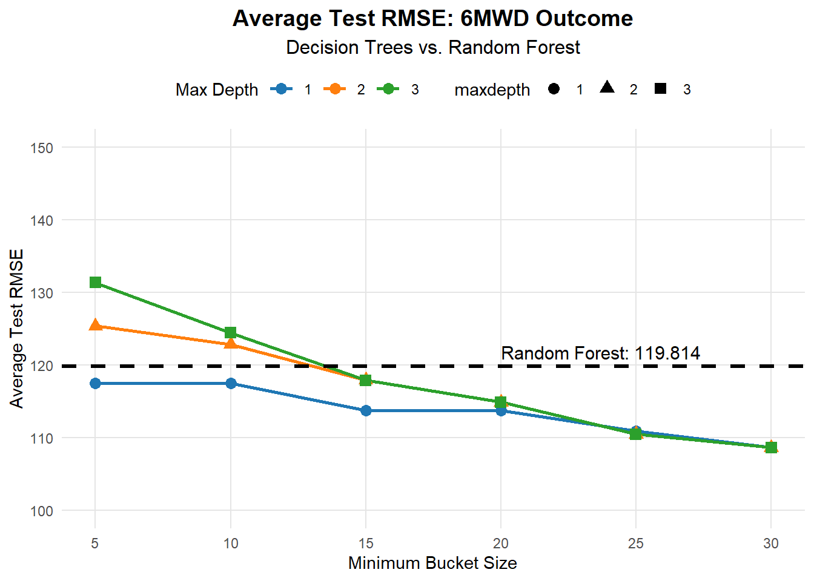
varlist=c("intervention_1_control_0","age","sex","race___4",
"hf_cat","egfr",protlist)
tmpdf = rbind(data.frame(set.total[,varlist],dataset="matched"),
data.frame(setdiff(ps.df[,varlist],set.total[,varlist]),dataset="unmatched"))
tmpdf$dataset=factor(tmpdf$dataset,levels=c("unmatched","matched"))
tmpdf$grp=str_c(tmpdf$intervention_1_control_0,tmpdf$dataset)
tmpdf$grp=as.factor(tmpdf$grp)
tmpdf$grp=fct_collapse(tmpdf$grp, Unmatched = c("0unmatched","1unmatched"), MatchedControl = "0matched",MatchedIntervention = "1matched")
tmpdf$grp = factor(tmpdf$grp,levels = c("MatchedControl","MatchedIntervention","Unmatched"))
tmpdf=tmpdf[,-which(names(tmpdf) %in% c("intervention_1_control_0","dataset"))]
tbl_summary(tmpdf,
by=grp,
type = all_continuous() ~ "continuous2",
statistic = list(all_continuous() ~ c("{mean} ({sd})",
"{median} ({p25}, {p75})",
"{min}, {max}"),
all_categorical() ~ "{n} / {N} ({p}%)"
),label = list(age ~ "Age",
sex ~ "Sex (Female=1)",
race___4 ~ "Race(White=1)",
hf_cat ~ "HF Category (HFpEF=1) (Study)",
egfr ~ "EGFR (Study)",
ALCAM ~ "ALCAM",
Gal.4 ~ "Gal-4",
PECAM.1 ~ "PECAM-1",
GP6 ~ "GP6",
ST2 ~ "ST2"
),
missing_text = "(Missing)"
) %>% modify_header(label ~ "**Variable**") %>%
modify_caption("**Baseline Measurements (Unmatched vs. Matched) 6MWD**")| Variable | MatchedControl N = 711 |
MatchedIntervention N = 711 |
Unmatched N = 391 |
|---|---|---|---|
| Age | |||
| Mean (SD) | 72 (7) | 72 (8) | 72 (8) |
| Median (Q1, Q3) | 72 (66, 77) | 73 (64, 79) | 69 (65, 77) |
| Min, Max | 60, 90 | 60, 91 | 60, 90 |
| Sex (Female=1) | |||
| 0 | 30 / 71 (42%) | 41 / 71 (58%) | 18 / 39 (46%) |
| 1 | 41 / 71 (58%) | 30 / 71 (42%) | 21 / 39 (54%) |
| Race(White=1) | |||
| 0 | 34 / 71 (48%) | 29 / 71 (41%) | 17 / 39 (44%) |
| 1 | 37 / 71 (52%) | 42 / 71 (59%) | 22 / 39 (56%) |
| HF Category (HFpEF=1) (Study) | |||
| 0 | 41 / 71 (58%) | 33 / 71 (46%) | 18 / 39 (46%) |
| 1 | 30 / 71 (42%) | 38 / 71 (54%) | 21 / 39 (54%) |
| EGFR (Study) | |||
| Mean (SD) | 57 (22) | 52 (22) | 57 (24) |
| Median (Q1, Q3) | 58 (36, 70) | 47 (38, 63) | 54 (38, 75) |
| Min, Max | 19, 101 | 17, 107 | 18, 98 |
| (Missing) | 1 | 0 | 0 |
| ALCAM | |||
| Mean (SD) | 6.66 (0.28) | 6.66 (0.32) | 6.78 (0.50) |
| Median (Q1, Q3) | 6.68 (6.44, 6.86) | 6.66 (6.42, 6.86) | 6.75 (6.34, 7.10) |
| Min, Max | 6.08, 7.22 | 5.99, 7.40 | 6.06, 7.82 |
| Gal-4 | |||
| Mean (SD) | 3.88 (0.56) | 3.95 (0.58) | 3.93 (0.93) |
| Median (Q1, Q3) | 3.92 (3.54, 4.29) | 3.95 (3.59, 4.37) | 3.82 (3.27, 4.33) |
| Min, Max | 2.49, 5.48 | 2.74, 5.50 | 2.38, 6.13 |
| PECAM-1 | |||
| Mean (SD) | 3.41 (0.36) | 3.39 (0.34) | 3.53 (0.47) |
| Median (Q1, Q3) | 3.44 (3.19, 3.68) | 3.44 (3.15, 3.64) | 3.41 (3.19, 3.75) |
| Min, Max | 2.52, 4.16 | 2.36, 4.23 | 2.75, 4.75 |
| GP6 | |||
| Mean (SD) | 1.80 (0.46) | 1.77 (0.62) | 1.74 (0.55) |
| Median (Q1, Q3) | 1.83 (1.45, 2.13) | 1.74 (1.38, 2.10) | 1.71 (1.34, 2.17) |
| Min, Max | 0.83, 3.15 | 0.55, 3.55 | 0.69, 2.96 |
| ST2 | |||
| Mean (SD) | 6.57 (0.86) | 6.72 (0.81) | 6.77 (0.80) |
| Median (Q1, Q3) | 6.48 (5.95, 7.16) | 6.71 (6.20, 7.27) | 6.74 (6.21, 7.36) |
| Min, Max | 5.13, 9.44 | 5.13, 9.12 | 4.89, 8.52 |
| 1 n / N (%) | |||
Change In Protein Expression
#create long form dataset
rprotfuds_long=pivot_longer(data=rprotfuds[,
c("subject_id","timepoint","intervention_1_control_0",
"bl_smw","fu_smw","bl_sppb","fu_sppb",protlist)],
cols=protlist,
names_to='Protein',values_to='ExpressionLevel')
rprotfuds_long$sppb_chg = rprotfuds_long$fu_sppb - rprotfuds_long$bl_sppb
rprotfuds_long$smw_chg = rprotfuds_long$fu_smw - rprotfuds_long$bl_smw
colnames(rprotfuds_long)[3] <- "Intervention"
rprotfuds_long$Protein = factor(rprotfuds_long$Protein,levels=protlist)
rprotds_wide=merge(rprotblds_long,
rprotfuds_long,by=c('subject_id','Protein','Intervention',"bl_smw","fu_smw","bl_sppb","fu_sppb","sppb_chg","smw_chg"),
all.x=TRUE)
rprotds_wide$Protein_change = (rprotds_wide$ExpressionLevel.y) - (rprotds_wide$ExpressionLevel.x)
print(ggplot(data=rprotds_wide,
mapping=aes(x=Intervention, y=ExpressionLevel.y/ExpressionLevel.x, fill=Intervention))+
geom_boxplot()+facet_wrap_paginate('Protein',scales='free',ncol=3,
page=1)+hw+
labs(y="Ratio of change from baseline to 12-weeks")+
geom_hline(yintercept=1,linetype=2)+
scale_y_continuous(trans='log2',labels = function(x) sprintf("%.3f", x),
breaks=seq(0.5,1.5,length.out=6))+
scale_x_discrete(breaks=c(1,0),
labels=c("RI","AC"))+
scale_fill_discrete(breaks=c(0,1),
labels=c("AC","RI"))+
theme(axis.title.x = element_blank(),
axis.title.y = element_text(face="bold"),
legend.title = element_blank(),
legend.position = c(0.85,0.15),
legend.box.background = element_rect(color = "black")))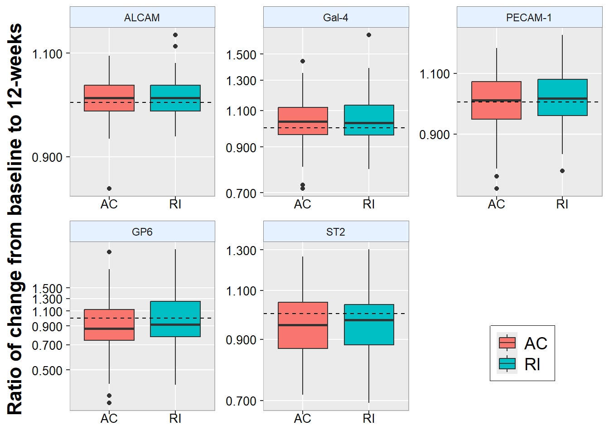
Causal Mediation Analysis
SPPB
rprotblds_long2=pivot_longer(data=rprotblds[,
c("subject_id","timepoint","intervention_1_control_0",
"bl_smw","fu_smw","bl_sppb","fu_sppb",
"age","sex","race___4","hf_cat",protlist)],
cols=protlist,
names_to='Protein',values_to='ExpressionLevel')
rprotfuds_long2=pivot_longer(data=rprotfuds[,
c("subject_id","timepoint","intervention_1_control_0",
"bl_smw","fu_smw","bl_sppb","fu_sppb",
"age","sex","race___4","hf_cat",protlist)],
cols=protlist,
names_to='Protein',values_to='ExpressionLevel')
rprotblds_long2$sppb_chg = rprotblds_long2$fu_sppb - rprotblds_long2$bl_sppb
rprotblds_long2$sppb_logchg = log2(rprotblds_long2$fu_sppb) - log2(rprotblds_long2$bl_sppb)
rprotblds_long2$smw_chg = rprotblds_long2$fu_smw - rprotblds_long2$bl_smw
rprotblds_long2$smw_logchg = log2(rprotblds_long2$fu_smw) - log2(rprotblds_long2$bl_smw)
rprotfuds_long2$sppb_chg = rprotfuds_long2$fu_sppb - rprotfuds_long2$bl_sppb
rprotfuds_long2$sppb_logchg = log2(rprotfuds_long2$fu_sppb) - log2(rprotfuds_long2$bl_sppb)
rprotfuds_long2$smw_chg = rprotfuds_long2$fu_smw - rprotfuds_long2$bl_smw
rprotfuds_long2$smw_logchg = log2(rprotfuds_long2$fu_smw) - log2(rprotfuds_long2$bl_smw)
colnames(rprotblds_long2)[3] <- "Intervention"
colnames(rprotfuds_long2)[3] <- "Intervention"
rprotblds_long2$Protein = factor(rprotblds_long2$Protein,levels=protlist)
rprotfuds_long2$Protein = factor(rprotfuds_long2$Protein,levels=protlist)
dftmp.all=merge(rprotblds_long2,
rprotfuds_long2,by=c('subject_id','Protein','Intervention',
"bl_smw","fu_smw","bl_sppb","fu_sppb","sppb_chg","smw_chg",
"sppb_logchg","smw_logchg",
"age","sex","race___4","hf_cat"),
all.x=TRUE)
dftmp.all$Protein_change = (dftmp.all$ExpressionLevel.y) - (dftmp.all$ExpressionLevel.x)
for (i in 1:length(protlist)){
#limited to propensity matched participants
dftmp = dftmp.all[!is.na(dftmp.all$sppb_chg) &
!is.na(dftmp.all$Protein_change) &
dftmp.all$subject_id %in% matchedset.sppb$subject_id &
dftmp.all$Protein==protlist[i],]
#model the effect of the intervention on the outcome
total_model <- lm(sppb_chg ~ Intervention+ExpressionLevel.x + age + sex + race___4 + hf_cat,
data = dftmp)
#model the effect of the intervention on the mediator (change in level)
mediator_model <- lm(Protein_change ~ Intervention+ExpressionLevel.x + age + sex + race___4 + hf_cat,
data = dftmp)
#model the outcome with both the intervention and mediator (protein) included
outcome_model <- lm(sppb_chg ~ Intervention+Protein_change +ExpressionLevel.x+age + sex + race___4 + hf_cat,
data = dftmp)
# Estimate the direct and indirect effects using the mediation package
med_results <- mediate(mediator_model, outcome_model,
treat = "Intervention", mediator = "Protein_change",
boot = TRUE, sims = 1000) # Bootstrap for confidence intervals
# Print summary of mediation results
print(summary(med_results))
plot(med_results,main=protlist[i],cex.main=1.5,cex.lab=1.2)
}
Causal Mediation Analysis
Nonparametric Bootstrap Confidence Intervals with the Percentile Method
Estimate 95% CI Lower 95% CI Upper p-value
ACME 0.0112777 -0.0443059 0.1470273 0.658
ADE 1.4370262 0.7396219 2.1016893 <2e-16 ***
Total Effect 1.4483039 0.7638837 2.1222320 <2e-16 ***
Prop. Mediated 0.0077868 -0.0334760 0.1144329 0.658
---
Signif. codes: 0 '***' 0.001 '**' 0.01 '*' 0.05 '.' 0.1 ' ' 1
Sample Size Used: 128
Simulations: 1000
Causal Mediation Analysis
Nonparametric Bootstrap Confidence Intervals with the Percentile Method
Estimate 95% CI Lower 95% CI Upper p-value
ACME 0.00031026 -0.07258837 0.08038302 0.932
ADE 1.45667418 0.80232970 2.14785395 <2e-16 ***
Total Effect 1.45698445 0.78943598 2.14355269 <2e-16 ***
Prop. Mediated 0.00021295 -0.05257309 0.06270897 0.932
---
Signif. codes: 0 '***' 0.001 '**' 0.01 '*' 0.05 '.' 0.1 ' ' 1
Sample Size Used: 128
Simulations: 1000 
Causal Mediation Analysis
Nonparametric Bootstrap Confidence Intervals with the Percentile Method
Estimate 95% CI Lower 95% CI Upper p-value
ACME -0.00067210 -0.09150643 0.08813166 0.96
ADE 1.41428792 0.75421336 2.10143779 <2e-16 ***
Total Effect 1.41361582 0.76131663 2.08730448 <2e-16 ***
Prop. Mediated -0.00047545 -0.06785884 0.06450624 0.96
---
Signif. codes: 0 '***' 0.001 '**' 0.01 '*' 0.05 '.' 0.1 ' ' 1
Sample Size Used: 128
Simulations: 1000 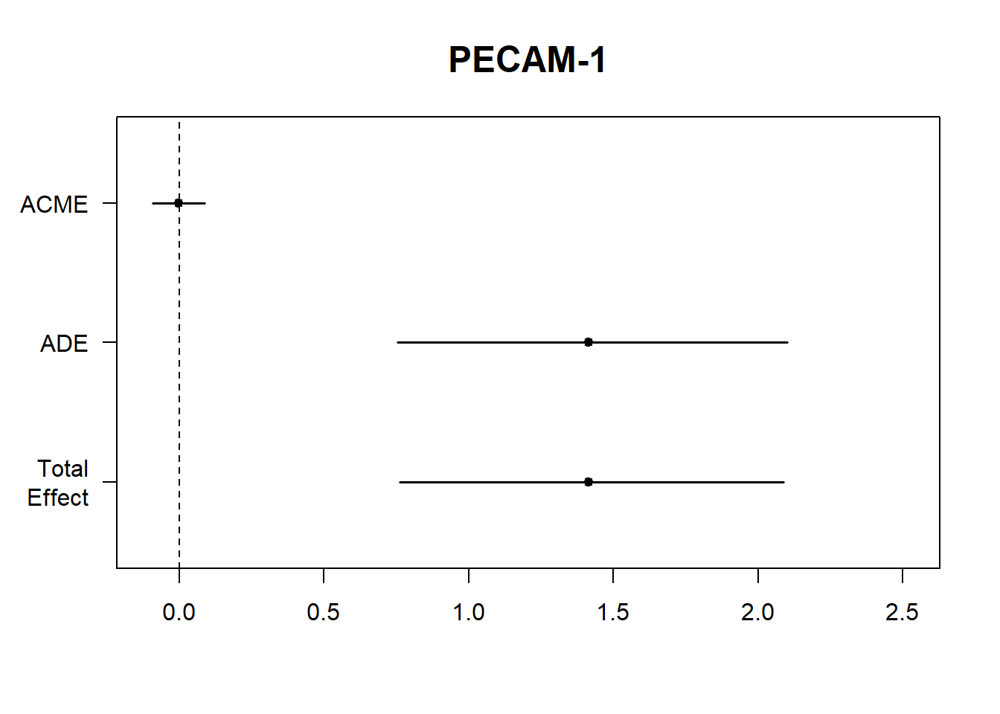
Causal Mediation Analysis
Nonparametric Bootstrap Confidence Intervals with the Percentile Method
Estimate 95% CI Lower 95% CI Upper p-value
ACME 0.035019 -0.109807 0.202821 0.57
ADE 1.399091 0.693971 2.084499 <2e-16 ***
Total Effect 1.434110 0.727782 2.116419 <2e-16 ***
Prop. Mediated 0.024419 -0.089992 0.140424 0.57
---
Signif. codes: 0 '***' 0.001 '**' 0.01 '*' 0.05 '.' 0.1 ' ' 1
Sample Size Used: 128
Simulations: 1000 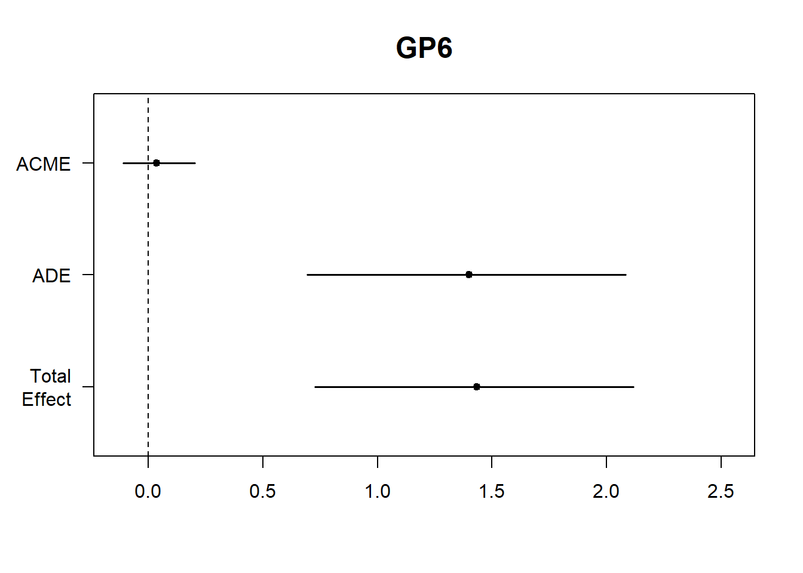
Causal Mediation Analysis
Nonparametric Bootstrap Confidence Intervals with the Percentile Method
Estimate 95% CI Lower 95% CI Upper p-value
ACME -0.131974 -0.375969 0.052969 0.186
ADE 1.607860 0.873420 2.279391 <2e-16 ***
Total Effect 1.475887 0.752042 2.154402 <2e-16 ***
Prop. Mediated -0.089420 -0.335047 0.033717 0.186
---
Signif. codes: 0 '***' 0.001 '**' 0.01 '*' 0.05 '.' 0.1 ' ' 1
Sample Size Used: 128
Simulations: 1000 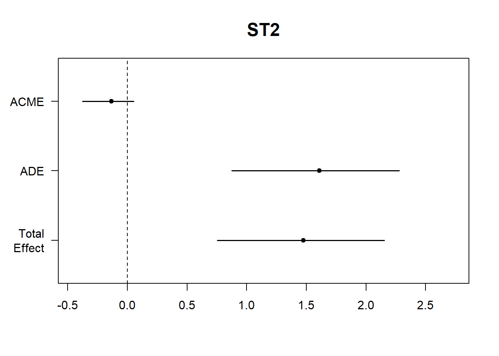
6MWD
#6mwd
for (i in 1:length(protlist)){
#limited to propensity matched participants
dftmp = dftmp.all[!is.na(dftmp.all$smw_chg) &
!is.na(dftmp.all$Protein_change) &
dftmp.all$subject_id %in% matchedset.6mwd$subject_id &
dftmp.all$Protein==protlist[i],]
#model the effect of the intervention on the outcome
total_model <- lm(smw_chg ~ Intervention+ExpressionLevel.x + age + sex + race___4 + hf_cat,
data = dftmp)
#model the effect of the intervention on the mediator (change in level)
mediator_model <- lm(Protein_change ~ Intervention+ExpressionLevel.x + age + sex + race___4 + hf_cat,
data = dftmp)
#model the outcome with both the intervention and mediator (protein) included
outcome_model <- lm(smw_chg ~ Intervention+Protein_change +ExpressionLevel.x+age + sex + race___4 + hf_cat,
data = dftmp)
# Estimate the direct and indirect effects using the mediation package
med_results <- mediate(mediator_model, outcome_model,
treat = "Intervention", mediator = "Protein_change",
boot = TRUE, sims = 1000) # Bootstrap for confidence intervals
# Print summary of mediation results
print(summary(med_results))
plot(med_results,main=protlist[i],cex.main=1.5,cex.lab=1.2)
}
Causal Mediation Analysis
Nonparametric Bootstrap Confidence Intervals with the Percentile Method
Estimate 95% CI Lower 95% CI Upper p-value
ACME -0.5775539 -7.3727621 8.8372515 0.866
ADE 59.2197034 19.8044741 100.1762208 0.002 **
Total Effect 58.6421494 22.2009797 100.2017379 <2e-16 ***
Prop. Mediated -0.0098488 -0.1354355 0.1714835 0.866
---
Signif. codes: 0 '***' 0.001 '**' 0.01 '*' 0.05 '.' 0.1 ' ' 1
Sample Size Used: 111
Simulations: 1000 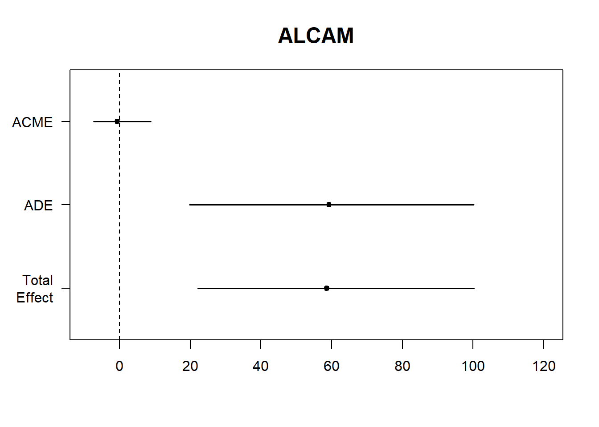
Causal Mediation Analysis
Nonparametric Bootstrap Confidence Intervals with the Percentile Method
Estimate 95% CI Lower 95% CI Upper p-value
ACME -0.2364140 -6.1284251 4.4123838 0.842
ADE 60.3374524 25.7116235 102.5295121 0.004 **
Total Effect 60.1010384 24.0783575 102.5090392 0.004 **
Prop. Mediated -0.0039336 -0.1364621 0.0941301 0.842
---
Signif. codes: 0 '***' 0.001 '**' 0.01 '*' 0.05 '.' 0.1 ' ' 1
Sample Size Used: 111
Simulations: 1000 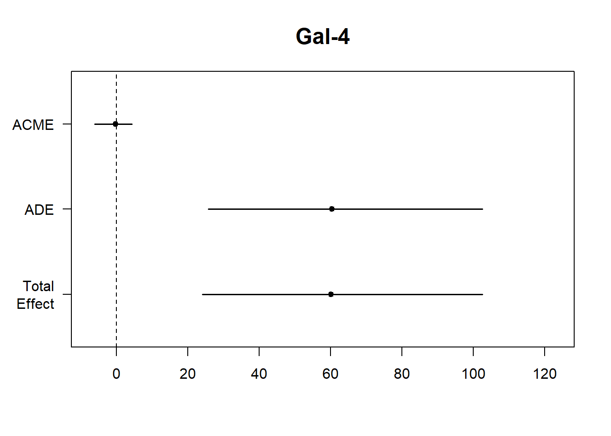
Causal Mediation Analysis
Nonparametric Bootstrap Confidence Intervals with the Percentile Method
Estimate 95% CI Lower 95% CI Upper p-value
ACME 0.1300196 -4.5078270 6.0289991 0.906
ADE 58.8295925 20.6889338 98.6789209 <2e-16 ***
Total Effect 58.9596122 21.0618437 98.5372832 <2e-16 ***
Prop. Mediated 0.0022052 -0.0926372 0.1362285 0.906
---
Signif. codes: 0 '***' 0.001 '**' 0.01 '*' 0.05 '.' 0.1 ' ' 1
Sample Size Used: 111
Simulations: 1000 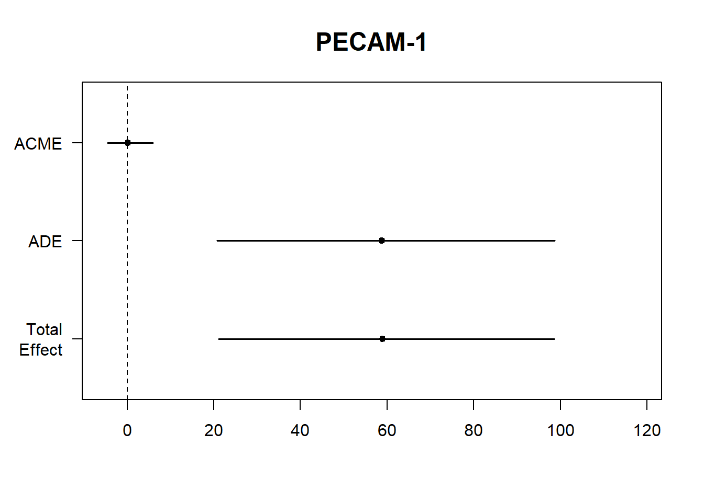
Causal Mediation Analysis
Nonparametric Bootstrap Confidence Intervals with the Percentile Method
Estimate 95% CI Lower 95% CI Upper p-value
ACME -0.665863 -8.203288 6.810014 0.888
ADE 59.899482 24.365834 98.173283 <2e-16 ***
Total Effect 59.233619 22.454889 98.443266 0.004 **
Prop. Mediated -0.011241 -0.209431 0.126855 0.892
---
Signif. codes: 0 '***' 0.001 '**' 0.01 '*' 0.05 '.' 0.1 ' ' 1
Sample Size Used: 111
Simulations: 1000 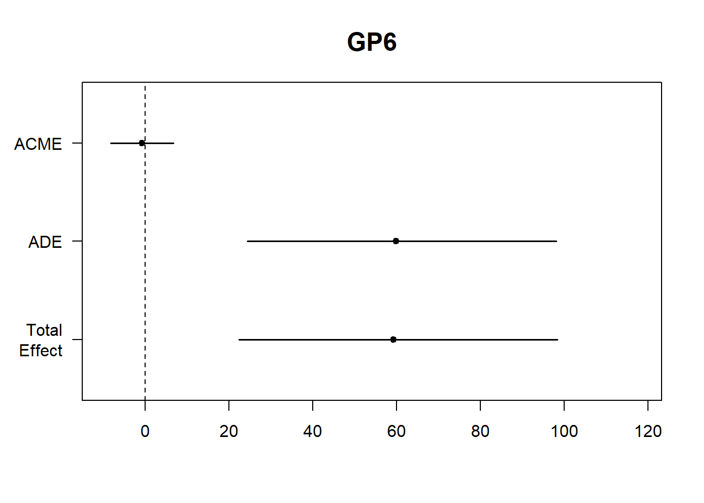
Causal Mediation Analysis
Nonparametric Bootstrap Confidence Intervals with the Percentile Method
Estimate 95% CI Lower 95% CI Upper p-value
ACME -2.330332 -12.680389 5.656980 0.6
ADE 61.292761 27.876866 104.654924 <2e-16 ***
Total Effect 58.962429 24.840812 104.502621 <2e-16 ***
Prop. Mediated -0.039522 -0.323582 0.100626 0.6
---
Signif. codes: 0 '***' 0.001 '**' 0.01 '*' 0.05 '.' 0.1 ' ' 1
Sample Size Used: 111
Simulations: 1000 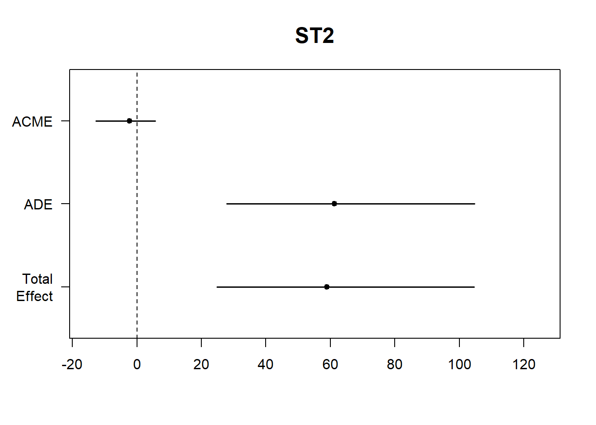
WGCNA Protein Clustering
cat("\n=== WGCNA Module Analysis ===\n")
=== WGCNA Module Analysis ===# Visualize correlation matrices
ggcorrplot(cor(na.omit(rprotblds[, 3:94])),
title = "All Participants (Baseline)",
hc.order = TRUE,
hc.method = "complete"
) + hw + theme(
axis.text = element_text(size = 5),
axis.title = element_blank(),
axis.text.x = element_text(angle = 90))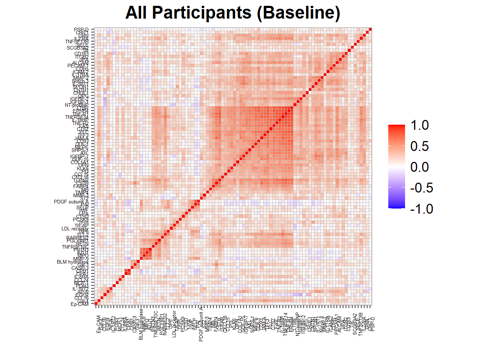
# Correlation matrix for usual care
p1 <- ggcorrplot(cor(na.omit(rprotblds[rprotblds$intervention_1_control_0 == 0, 3:94])),
title = "Usual Care Patients (Baseline)",
hc.order = TRUE,
hc.method = "complete"
) + hw +
theme(
axis.text = element_text(size = 5),
axis.title = element_blank(),
axis.text.x = element_text(angle = 90)
)
print(p1)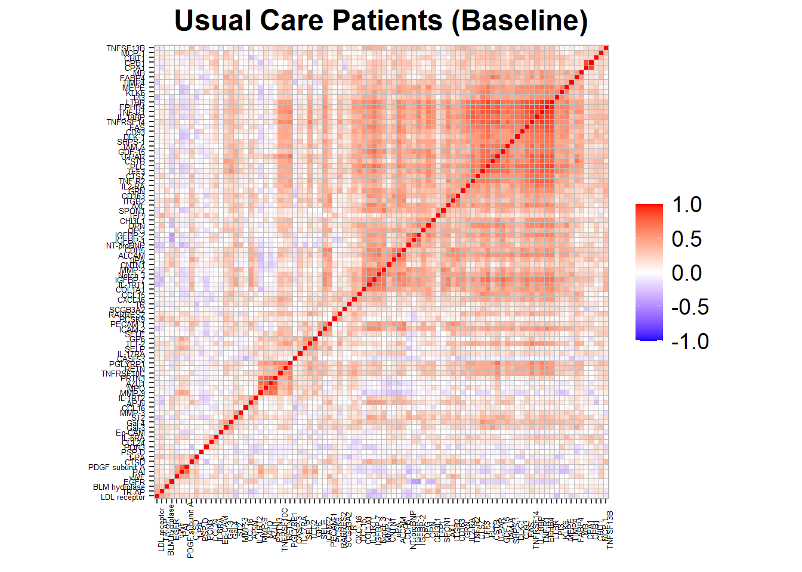
# Correlation matrix for rehabilitation
cormat2 <- cor(na.omit(rprotblds[rprotblds$intervention_1_control_0 == 1,
as.character(p1$data[1:92, 1])]))
ggcorrplot(cormat2,
title = "Rehab Patients (Baseline)",
hc.order = FALSE,
hc.method = "complete"
) + hw +
theme(
axis.text = element_text(size = 5),
axis.title = element_blank(),
axis.text.x = element_text(angle = 90)
)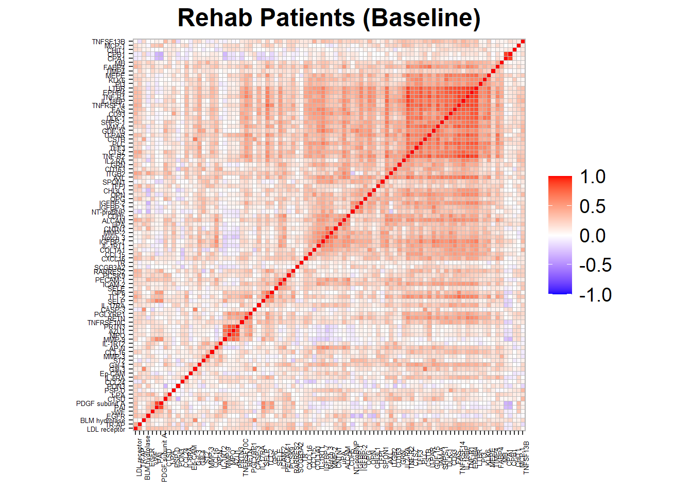
# Test equality of covariance matrices between intervention groups
testCov(
na.omit(rprotblds[rprotblds$intervention_1_control_0 == 0,
as.character(p1$data[1:92, 1])]),
na.omit(rprotblds[rprotblds$intervention_1_control_0 == 1,
as.character(p1$data[1:92, 1])]),
method = "ALL",
J = 5000,
alpha = 0.05,
n.core = 1
)$HD
Two-Sample HD test
data: na.omit(rprotblds[rprotblds$intervention_1_control_0 == 0, as.character(p1$data[1:92, and na.omit(rprotblds[rprotblds$intervention_1_control_0 == 1, as.character(p1$data[1:92, 1])]) and 1])])
Statistic = 3.5841, p-value = 0.4858
alternative hypothesis: two.sided
$CLX
Two-Sample CLX test
data: na.omit(rprotblds[rprotblds$intervention_1_control_0 == 0, as.character(p1$data[1:92, and na.omit(rprotblds[rprotblds$intervention_1_control_0 == 1, as.character(p1$data[1:92, 1])]) and 1])])
Statistic = 12.846, p-value = 0.7246
alternative hypothesis: two.sided
$Scott
Two-Sample Scott test
data: na.omit(rprotblds[rprotblds$intervention_1_control_0 == 0, as.character(p1$data[1:92, and na.omit(rprotblds[rprotblds$intervention_1_control_0 == 1, as.character(p1$data[1:92, 1])]) and 1])])
Statistic = 0.36301, p-value = 0.7166
alternative hypothesis: two.sided
[[4]]
Two-Sample LC test
data: na.omit(rprotblds[rprotblds$intervention_1_control_0 == 0, as.character(p1$data[1:92, and na.omit(rprotblds[rprotblds$intervention_1_control_0 == 1, as.character(p1$data[1:92, 1])]) and 1])])
Statistic = -0.58919, p-value = 0.7221
alternative hypothesis: two.sided# No significant difference between groups at baseline
# Standardize protein expressions
naset <- which(apply(rprotblds[, 3:94], 1, function(x) sum(is.na(x))) == 1)
rprotblds.std <- apply(rprotblds[-naset, 3:94], 2, function(x) (x - mean(x) / sd(x)))
# Find optimal soft-thresholding power for scale-free network
powers <- c(c(1:20), seq(from = 22, to = 30, by = 2))
sft <- pickSoftThreshold(na.omit(rprotblds[, 3:94]), powerVector = powers, verbose = 5)pickSoftThreshold: will use block size 92.
pickSoftThreshold: calculating connectivity for given powers...
..working on genes 1 through 92 of 92 Power SFT.R.sq slope truncated.R.sq mean.k. median.k. max.k.
1 1 0.0001 0.00672 0.31400 20.80000 2.09e+01 37.100
2 2 0.7360 -0.76300 0.68100 7.65000 6.53e+00 20.600
3 3 0.8990 -0.93700 0.87200 3.59000 2.44e+00 13.300
4 4 0.9300 -1.04000 0.91200 1.96000 1.06e+00 9.290
5 5 0.8420 -1.11000 0.80700 1.19000 5.38e-01 6.900
6 6 0.0811 -1.53000 -0.08630 0.77200 2.62e-01 5.340
7 7 0.2200 -2.41000 0.05950 0.53100 1.34e-01 4.260
8 8 0.2200 -2.24000 0.07920 0.38200 7.06e-02 3.460
9 9 0.2080 -2.85000 -0.00276 0.28500 3.65e-02 2.870
10 10 0.2570 -3.01000 0.14200 0.21800 1.92e-02 2.410
11 11 0.2330 -3.20000 0.03110 0.17100 1.07e-02 2.040
12 12 0.2460 -3.24000 0.05210 0.13600 6.18e-03 1.750
13 13 0.2750 -3.33000 0.12300 0.11000 3.54e-03 1.500
14 14 0.2570 -3.49000 0.04900 0.09050 2.08e-03 1.310
15 15 0.2670 -3.50000 0.06370 0.07510 1.25e-03 1.140
16 16 0.2750 -3.52000 0.07630 0.06290 7.53e-04 0.997
17 17 0.3020 -3.57000 0.13000 0.05310 4.44e-04 0.877
18 18 0.3100 -3.50000 0.14400 0.04520 2.63e-04 0.774
19 19 0.2680 -3.27000 0.05890 0.03870 1.57e-04 0.685
20 20 0.2760 -3.23000 0.06970 0.03340 9.41e-05 0.608
21 22 0.3170 -3.41000 0.12300 0.02510 3.32e-05 0.482
22 24 0.3330 -3.47000 0.14300 0.01920 1.22e-05 0.386
23 26 0.3660 -3.45000 0.19400 0.01490 4.49e-06 0.316
24 28 0.3340 -3.47000 0.16600 0.01170 1.66e-06 0.260
25 30 0.3470 -3.38000 0.17700 0.00933 5.87e-07 0.216# Plot scale-free network fit
plot(sft$fitIndices[, 1], -sign(sft$fitIndices[, 3]) * sft$fitIndices[, 2],
xlab = "Soft Threshold (power)",
ylab = "Scale Free Topology Model Fit, signed R^2",
type = "n",
main = "Scale independence"
)
text(sft$fitIndices[, 1], -sign(sft$fitIndices[, 3]) * sft$fitIndices[, 2],
labels = powers, cex = 0.9, col = "red"
)
abline(h = 0.90, col = "red")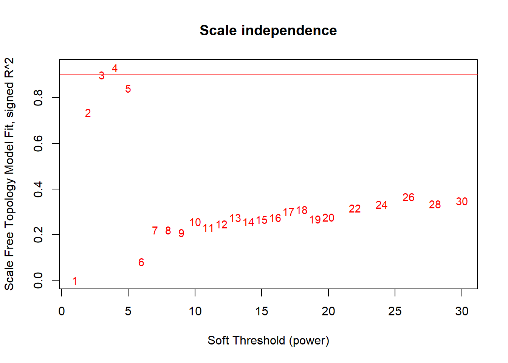
par(mar = c(1, 1, 1, 1))
plot(sft$fitIndices[, 1], sft$fitIndices[, 5],
xlab = "Soft Threshold (power)",
ylab = "Mean Connectivity",
type = "n",
main = "Mean connectivity"
)
text(sft$fitIndices[, 1], sft$fitIndices[, 5], labels = sft$fitIndices[, 1], col = "red")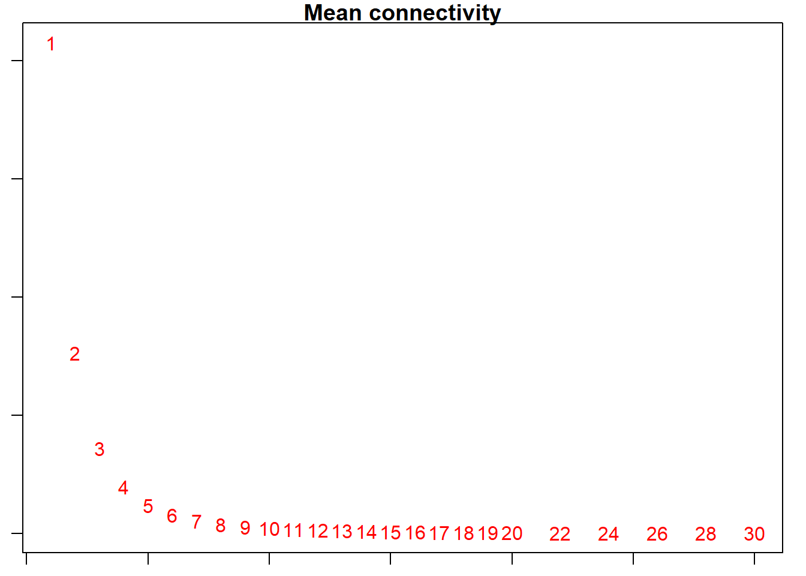
# Create adjacency matrix using soft-thresholding
adj1.all <- abs(cor(rprotblds.std))^4
# Convert adjacency to topological overlap matrix (TOM)
# TOM is more robust to noise than raw correlation
TOM.dissimilarity <- 1 - TOMsimilarity(adj1.all)..connectivity..
..matrix multiplication (system BLAS)..
..normalization..
..done.# Hierarchical clustering using TOM-based distance
rownames(TOM.dissimilarity) <- colnames(rprotblds.std)
hierADJ <- hclust(as.dist(TOM.dissimilarity), method = 'complete')
# Identify modules using dynamic tree cutting
Modules <- cutreeDynamic(
dendro = hierADJ,
distM = TOM.dissimilarity,
deepSplit = 2,
pamRespectsDendro = FALSE,
minClusterSize = 6
) ..cutHeight not given, setting it to 0.996 ===> 99% of the (truncated) height range in dendro.
..done.ModuleColors <- labels2colors(Modules)
cat("Protein module color assignments:\n")Protein module color assignments:print(table(ModuleColors))ModuleColors
blue brown green grey turquoise yellow
21 13 8 5 35 10 # Plot dendrogram with module colors
plotDendroAndColors(hierADJ, ModuleColors, "Module",
dendroLabels = NULL,
cex.dendroLabels = 0.5,
addGuide = FALSE,
main = "Protein dendrogram and module colors"
)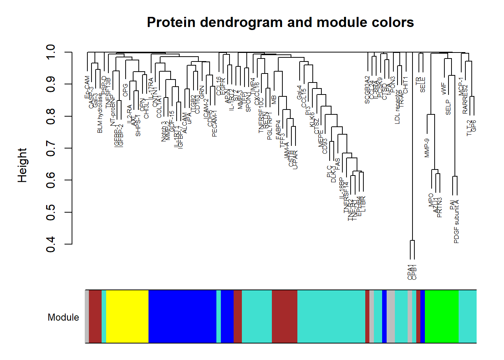
# Calculate module eigengenes (summarizes module expression)
MElist <- moduleEigengenes(as.data.frame(rprotblds.std), colors = ModuleColors)
MEs <- MElist$eigengenes
# Order modules so similar ones are adjacent
MEs0 <- orderMEs(MEs)
module_order <- names(MEs0) %>% gsub("ME", "", .)
# Add clinical data to module eigengene dataframe
MEs0$ID <- rprotblds$subject_id[-naset]
MEs0$age <- rprotblds$age[-naset]
MEs0$sex <- as.numeric(rprotblds$sex[-naset]) - 1
MEs0$bl_smw <- rprotblds$bl_smw[-naset]
MEs0$fu_smw <- rprotblds$fu_smw[-naset]
MEs0$chg_smw <- MEs0$fu_smw - MEs0$bl_smw
MEs0$bl_sppb <- rprotblds$bl_sppb[-naset]
MEs0$fu_sppb <- rprotblds$fu_sppb[-naset]
MEs0$chg_sppb <- MEs0$fu_sppb - MEs0$bl_sppb
# Calculate correlations between module eigengenes and clinical outcomes
df <- melt(cor(MEs0[, -which(names(MEs0) == "ID")], use = "pairwise.complete.obs"))
# Filter to relevant correlations
df <- df[(df$Var1 %in% c('age', 'bl_smw', 'chg_smw', 'bl_sppb', 'chg_sppb', 'sex')), ]
df <- df[(df$Var2 %in% c('MEturquoise', 'MEbrown', 'MEyellow', 'MEblue', 'MEgreen')), ]
# Calculate p-values
for (i in 1:nrow(df)) {
b1 <- as.character(df$Var1[i])
b2 <- as.character(df$Var2[i])
df$pval[i] <- cor.test(
MEs0[, which(colnames(MEs0) %in% b1)],
MEs0[, which(colnames(MEs0) %in% b2)],
method = "pearson",
use = "pairwise.complete.obs"
)$p.value
}
df$sig <- df$pval < 0.01
df$text <- ifelse(
df$sig == TRUE & df$value != 1,
paste0(round(df$value, 3), "*"),
round(df$value, 3)
)
# Plot module-outcome heatmap
print(
ggplot(df, aes(Var2, Var1, fill = value)) +
geom_tile(color = "white") +
scale_fill_gradient2(
low = "blue", high = "red", mid = "white",
midpoint = 0, limit = c(-0.5, 0.5), space = "Lab",
name = "Pearson\nCorrelation"
) +
theme_minimal() +
theme(axis.text.x = element_text(angle = 45, vjust = 1, size = 12, hjust = 1)) +
coord_fixed() +
geom_text(aes(Var2, Var1, label = text), color = "black", size = 4) +
theme(
axis.title.x = element_blank(),
axis.title.y = element_blank(),
panel.grid.major = element_blank(),
panel.border = element_blank(),
panel.background = element_blank(),
axis.ticks = element_blank(),
legend.position = "bottom",
legend.direction = "horizontal"
) +
guides(fill = guide_colorbar(
barwidth = 15, barheight = 1,
title.position = "top", title.hjust = 0.5
)) +
coord_flip()
)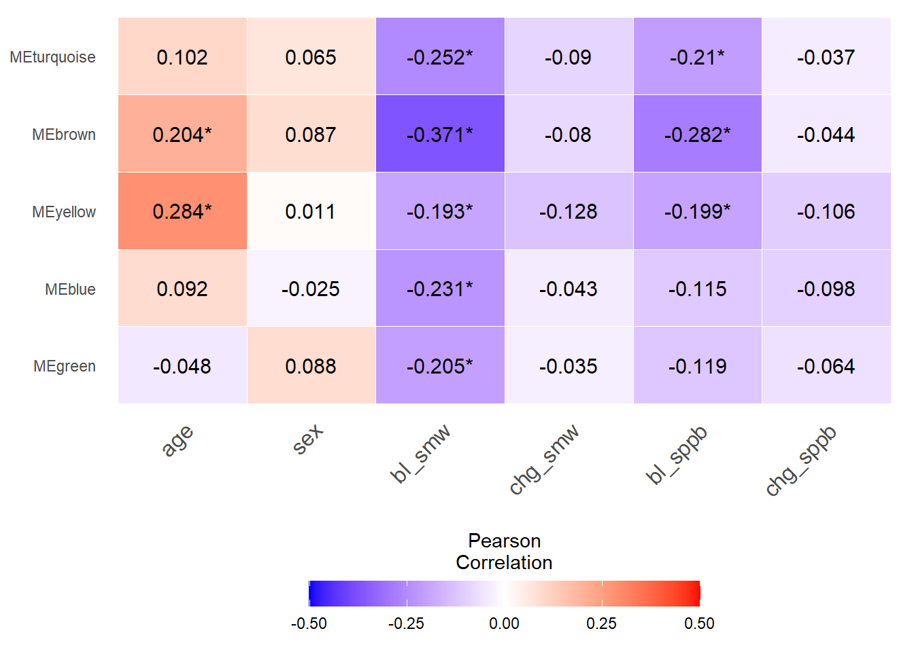
# Add treatment assignment to module eigengenes
MEs0$treatment <- rprotblds$intervention_1_control_0[-naset]
# Test module-treatment interactions for outcomes
cat("\n=== Module x Treatment Interactions ===\n")
=== Module x Treatment Interactions ===print(summary(lm(data = MEs0, formula = fu_sppb ~ bl_sppb + MEturquoise * treatment)))
Call:
lm(formula = fu_sppb ~ bl_sppb + MEturquoise * treatment, data = MEs0)
Residuals:
Min 1Q Median 3Q Max
-9.1556 -1.3491 0.3993 1.8797 5.2605
Coefficients:
Estimate Std. Error t value Pr(>|t|)
(Intercept) 2.28849 0.52762 4.337 2.3e-05 ***
bl_sppb 0.70709 0.07248 9.756 < 2e-16 ***
MEturquoise -6.27205 4.35906 -1.439 0.151779
treatment1 1.41930 0.36754 3.862 0.000153 ***
MEturquoise:treatment1 2.31193 5.68193 0.407 0.684529
---
Signif. codes: 0 '***' 0.001 '**' 0.01 '*' 0.05 '.' 0.1 ' ' 1
Residual standard error: 2.605 on 197 degrees of freedom
(30 observations deleted due to missingness)
Multiple R-squared: 0.3972, Adjusted R-squared: 0.385
F-statistic: 32.46 on 4 and 197 DF, p-value: < 2.2e-16print(summary(lm(data = MEs0, formula = fu_smw ~ bl_smw + MEturquoise * treatment)))
Call:
lm(formula = fu_smw ~ bl_smw + MEturquoise * treatment, data = MEs0)
Residuals:
Min 1Q Median 3Q Max
-263.24 -56.13 1.88 55.82 531.28
Coefficients:
Estimate Std. Error t value Pr(>|t|)
(Intercept) 86.78248 16.95734 5.118 8.43e-07 ***
bl_smw 0.80907 0.06599 12.261 < 2e-16 ***
MEturquoise -356.50951 175.54876 -2.031 0.0439 *
treatment1 36.67628 13.77237 2.663 0.0085 **
MEturquoise:treatment1 202.10817 220.65888 0.916 0.3610
---
Signif. codes: 0 '***' 0.001 '**' 0.01 '*' 0.05 '.' 0.1 ' ' 1
Residual standard error: 89.59 on 167 degrees of freedom
(60 observations deleted due to missingness)
Multiple R-squared: 0.5392, Adjusted R-squared: 0.5282
F-statistic: 48.86 on 4 and 167 DF, p-value: < 2.2e-16print(summary(lm(data = MEs0, formula = fu_smw ~ bl_smw + MEgreen * treatment)))
Call:
lm(formula = fu_smw ~ bl_smw + MEgreen * treatment, data = MEs0)
Residuals:
Min 1Q Median 3Q Max
-263.08 -55.17 8.54 50.25 525.01
Coefficients:
Estimate Std. Error t value Pr(>|t|)
(Intercept) 79.57198 17.06046 4.664 6.32e-06 ***
bl_smw 0.85223 0.06495 13.121 < 2e-16 ***
MEgreen 32.55467 170.85634 0.191 0.849
treatment1 34.22478 14.06454 2.433 0.016 *
MEgreen:treatment1 -138.04937 216.19842 -0.639 0.524
---
Signif. codes: 0 '***' 0.001 '**' 0.01 '*' 0.05 '.' 0.1 ' ' 1
Residual standard error: 90.76 on 167 degrees of freedom
(60 observations deleted due to missingness)
Multiple R-squared: 0.5271, Adjusted R-squared: 0.5158
F-statistic: 46.53 on 4 and 167 DF, p-value: < 2.2e-16print(summary(lm(data = MEs0, formula = fu_smw ~ bl_smw + MEblue * treatment)))
Call:
lm(formula = fu_smw ~ bl_smw + MEblue * treatment, data = MEs0)
Residuals:
Min 1Q Median 3Q Max
-285.65 -59.77 7.34 51.59 543.48
Coefficients:
Estimate Std. Error t value Pr(>|t|)
(Intercept) 85.32702 17.16907 4.970 1.65e-06 ***
bl_smw 0.82670 0.06602 12.522 < 2e-16 ***
MEblue -284.49950 166.03730 -1.713 0.0885 .
treatment1 35.29331 13.85073 2.548 0.0117 *
MEblue:treatment1 277.14520 218.11182 1.271 0.2056
---
Signif. codes: 0 '***' 0.001 '**' 0.01 '*' 0.05 '.' 0.1 ' ' 1
Residual standard error: 90.15 on 167 degrees of freedom
(60 observations deleted due to missingness)
Multiple R-squared: 0.5334, Adjusted R-squared: 0.5222
F-statistic: 47.73 on 4 and 167 DF, p-value: < 2.2e-16print(summary(lm(data = MEs0, formula = fu_sppb ~ bl_sppb + MEbrown * treatment)))
Call:
lm(formula = fu_sppb ~ bl_sppb + MEbrown * treatment, data = MEs0)
Residuals:
Min 1Q Median 3Q Max
-9.1851 -1.1418 0.3634 1.8630 4.2998
Coefficients:
Estimate Std. Error t value Pr(>|t|)
(Intercept) 2.33819 0.52447 4.458 1.39e-05 ***
bl_sppb 0.68660 0.07288 9.422 < 2e-16 ***
MEbrown -10.93469 4.54174 -2.408 0.017 *
treatment1 1.50505 0.36636 4.108 5.85e-05 ***
MEbrown:treatment1 7.07336 5.75308 1.229 0.220
---
Signif. codes: 0 '***' 0.001 '**' 0.01 '*' 0.05 '.' 0.1 ' ' 1
Residual standard error: 2.583 on 197 degrees of freedom
(30 observations deleted due to missingness)
Multiple R-squared: 0.4078, Adjusted R-squared: 0.3957
F-statistic: 33.91 on 4 and 197 DF, p-value: < 2.2e-16print(summary(lm(data = MEs0, formula = fu_smw ~ bl_smw + MEyellow * treatment)))
Call:
lm(formula = fu_smw ~ bl_smw + MEyellow * treatment, data = MEs0)
Residuals:
Min 1Q Median 3Q Max
-262.66 -57.34 3.07 55.79 541.09
Coefficients:
Estimate Std. Error t value Pr(>|t|)
(Intercept) 84.2256 16.7438 5.030 1.26e-06 ***
bl_smw 0.8167 0.0646 12.641 < 2e-16 ***
MEyellow -402.5395 160.1981 -2.513 0.0129 *
treatment1 37.9462 13.6872 2.772 0.0062 **
MEyellow:treatment1 228.9395 221.5374 1.033 0.3029
---
Signif. codes: 0 '***' 0.001 '**' 0.01 '*' 0.05 '.' 0.1 ' ' 1
Residual standard error: 89 on 167 degrees of freedom
(60 observations deleted due to missingness)
Multiple R-squared: 0.5453, Adjusted R-squared: 0.5344
F-statistic: 50.07 on 4 and 167 DF, p-value: < 2.2e-16# Extract most influential proteins within each module (top 5)
cat("\n=== Top 5 Proteins per Module ===\n")
=== Top 5 Proteins per Module ===top5mat <- matrix(0,5,6)
colnames(top5mat) <- rep("",6)
for (i in 1:(which(names(MEs0) == "ID") - 1)) {
clr <- sapply(names(MEs0)[1:(which(names(MEs0) == "ID") - 1)],
function(x) substring(x, 3, nchar(x)))[i]
colnames(top5mat)[i] <- as.character(clr)
geneModuleMembership <-
cor(rprotblds.std[, ModuleColors == clr], MEs0[, i], use = "p")
MMPvalue <- as.data.frame(
corPvalueStudent(as.matrix(geneModuleMembership), nrow(rprotblds.std))
)
names(geneModuleMembership) <- paste("MM", substring(
names(MEs0)[1:(which(names(MEs0) == "ID") - 1)], 3
), sep = "")[i]
names(MMPvalue) <- paste("p.MM", substring(
names(MEs0)[1:(which(names(MEs0) == "ID") - 1)], 3
), sep = "")[i]
top5mat[,i] <- matrix(rownames(geneModuleMembership[order(geneModuleMembership[, 1], decreasing = TRUE)[1:5], 1, drop = FALSE]),ncol=1)
}
gt(as.data.frame(top5mat), rownames_to_stub = TRUE) %>%
tab_header(title = "Top 5 Proteins per Module")| Top 5 Proteins per Module | ||||||
|---|---|---|---|---|---|---|
| green | blue | yellow | brown | turquoise | grey | |
| 1 | MMP-9 | Notch 3 | IGFBP-2 | CSTB | EPHB4 | PON3 |
| 2 | AZU1 | IGFBP-7 | OPN | U-PAR | TNF-R1 | Ep-CAM |
| 3 | PRTN3 | ALCAM | AXL | JAM-A | LTBR | CCL24 |
| 4 | MPO | CDH5 | SHPS-1 | TFF3 | TNFRSF14 | t-PA |
| 5 | PAI | IL-1RT1 | IGFBP-1 | FABP4 | IL-18BP | CPA1 |